IMP · 026
Fase 2 · Identidade visual · Apresentação de decisão
Três territórios visuais.
Uma escolha de marca.Imperador Home Design · Maio 2026
01
Ato 01 de 03 · Diagnóstico
Imperador Home Design
Onde estamos hoje.
Auditoria do sistema visual em uso no @imperadorhomedesign. Seis observações ancoradas no feed real, na bio e no logo. Cada uma isola um elemento e nomeia o gap que a Fase 2 da identidade precisa fechar.
Ato 01 · Agora
Auditoria
Seis observações sobre o feed atual, observação por observação.
Ato 02 · Em seguida
Brief estratégico
Marca em uma página, oito componentes, seis regras de julgamento.
Ato 03 · Decisão
Três territórios
Três leituras proprietárias da mesma estratégia, julgadas pelas mesmas regras.
05
Como a marca aparece hoje · contexto para a auditoria
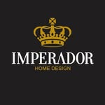
Imperador Home Design Cianorte · @imperadorhomedesign
10,4K seguidores · 1.685 posts · 14 anos de operação
Bio do perfil
"Há 14 anos transformando lares com design, conforto e exclusividade. Seu ambiente, sua história, nossa paixão. Atendimento exclusivo no WhatsApp."
Posicionamento extraído
Acolhimento residencial em construção, com copy contemplativo e vitrine ainda popular.
Em zona neutra, levemente morador, ambígua entre emocional e racional.
Highlights observados
Puff
Estofados
Poltronas
Banquetas
Cadeiras
Mesas de Jantar
14 anos
Personalize
Vocabulário próprio
acolhimento
história
presença
identidade
sentido
lares
envolve
O copy já fala acolhimento. A vitrine visual ainda não acompanhou: highlights organizados por categoria de produto, selos como "14 anos" e "Personalize", dourado quente na paleta. Vocabulário visual de loja popular. A operação interna já fez a transição (Modalle, Pollus, Uultis, AVIVA e AVIVA em estoque), ativo subutilizado no feed. Tese: cravar o emocional para morador, com a curadoria visível.
"Pensou em mobiliar e decorar, o primeiro nome tem que ser Imperador Home Design."
Andreia · ambição declarada na entrevista
Posts recentes · captions verbatim
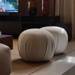
"Um espaço que recebe, envolve e transmite sensação de lar logo na chegada. Não é só sobre como a casa parece, é sobre como ela faz a gente se sentir."
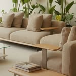
"Cada escolha é pensada para criar ambientes que acolhem, impressionam e permanecem na memória. Design que conecta."
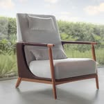
"Seguimos avançando na ambientação no Edifício Mackenzie. Hoje é a vez do salão de festas e do hall de entrada · projeto entregue."
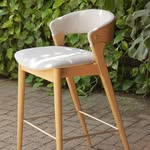
"O contemporâneo é sobre criar espaços que fazem sentido para a vida de hoje. Linhas leves, ambientes integrados, conforto visual sem excessos."
01
Ato 01 de 03 · Auditoria
Auditoria · @imperadorhomedesign · maio 2026
Seis observações sobre o sistema visual atual.
Cada observação isola um elemento e nomeia a lacuna entre o que o feed comunica hoje e o que a Marca em uma página pede.
Fonte
@imperadorhomedesign
Método
Elemento por elemento
O feed já fala o novo. O logo continua falando o antigo.
Foto de perfil em coroa dourada sobre fundo preto contra feed de neutros quentes orgânicos.
Coroa dourada e serifa rígida sobre fundo preto.
Vocabulário de luxo barroco. Brasão, ouro e preto. Sentido oposto à Marca em uma página.
O feed adotou a paleta certa. A marca não foi avisada.
Posts em neutros quentes orgânicos contra coroa dourada sobre preto da marca.
Cormorant Light em cada tamanho. Sem papéis claros.
Uma serifa luxuosa para tudo, sem hierarquia entre título, corpo e código.
Profissional. Organizada por categoria, não por ambiente.
Highlights por produto (Puff, Estofados, Mesas) em vez de por casa ou projeto.
Duas frases-marca na bio. Nenhuma cravada.
"Há 14 anos transformando" + "Seu ambiente, sua história, nossa paixão". Vocabulário institucional, recall dilui.
02
Diagnóstico atualizado · Antes de abrir os territórios
ACERVO DO FEED · 61 POSTS · 2026
O feed da Imperador Home Design em 7 entradas.
Amostra completa de 19/jan a 01/jun de 2026. Análise visual da capa de cada post cruzada com a legenda. Cinco categorias têm rosto humano. Três não. A marca já humaniza, mas raramente nomeia quem está na frente da câmera.
NºCategoriaPosts% feed
01
Andreia · curadora visual da marca
19
31%
02
Produto / Ambiente · sem pessoa
22
36%
03
Evento · data comemorativa, lançamento, brunch
8
13%
04
Convidado · artesão, parceiro, visitante
4
7%
05
Gerência · apresentador recorrente da loja
4
7%
06
Promocional · desconto explícito, % OFF
2
3%
07
Projeto entregue · empreendimento citado pelo nome
1
2%
TOTAL6099%*
OBSERVAÇÃO · 01
Andreia aparece em 1 a cada 3 posts do feed. A presença visual é alta e consistente. O que falta é a legenda nomeá-la como autora curatorial. Hoje ela aparece como rosto, não como assinatura.
OBSERVAÇÃO · 02
Promocional representa apenas 3% do feed em 2026. O Black Friday 70% OFF de dez/2025 foi um pico isolado. O recuo desse vocabulário ao longo dos últimos meses indica direção já alinhada com o reposicionamento premium.
OBSERVAÇÃO · 03
Existe um segundo rosto recorrente nos reels (apresentador masculino, presença consistente em 5% dos posts). O papel desse interlocutor na operação da loja influencia a forma como cada território vai tratar a presença humana na comunicação.
*Soma 99% por arredondamento. Categorias mutuamente exclusivas pela aparição visual dominante na capa. Fonte: API pública do Instagram + leitura manual de 61 thumbnails.
02
Diagnóstico atualizado · Quatro entradas dominantes
02 · PRODUTO36% · 22 POSTS
Nº DY2-NaJkWpB · 27/mai/2026 · carrossel
"Para você, os detalhes realmente importam? A harmonização das cores, a escolha da madeira..."
POR QUE PERTENCE
Ambiente fotografado vazio. Móveis em composição, ninguém ocupando. Legenda fala da peça em terceira pessoa.
01 · ANDREIA31% · 19 POSTS
Nº DVMpz_kge67 · 25/fev/2026 · reel
"Tem gente que acha que ambiente perfeito é sobre ter peças bonitas. Pra mim, é sobre saber combinar."
POR QUE PERTENCE
Andreia em primeira pessoa explícita ("pra mim"), enquadrada sentada no ambiente que ela curou. Co-credita @andreiasilvadecor.
03 · EVENTO / DATA13% · 8 POSTS
Nº DXFqpxrPKxf · 13/abr/2026 · vídeo
"Ela passou a vida inteira cuidando de todo mundo. Agora é a vez dela. Dia das Mães virou experiência completa."
POR QUE PERTENCE
Ancorado em data comemorativa (Mães, Páscoa, Brunch). Pessoas aparecem mas como cenário do evento, não como rostos da marca.
04 · CONVIDADO7% · 4 POSTS
Nº DX2HnAVxBY4 · 02/mai/2026 · reel
"Recebemos na Imperador a talentosa artesã @genisatim, que nos apresentou sua coleção de vasos autorais."
POR QUE PERTENCE
Convidado é nomeado pelo @ na legenda. Grupo posa na loja. Categoria abriga artesãos, parceiros, perfumistas que visitam o showroom.
02
Diagnóstico atualizado · Três entradas residuais
05 · GERÊNCIA7% · 4 POSTS
Nº DY7Piv6Rr3m · 29/mai/2026 · reel
"Olha esse sofá. Mas olha de verdade. Couro legítimo, linhas limpas, proporções generosas."
POR QUE PERTENCE
Mesmo rosto masculino recorrente (ruivo, barba, preto) em pelo menos 3 reels. Voz da marca em segunda pessoa, autoridade técnica.
06 · PROMOCIONAL3% · 2 POSTS
Nº DTs4okHEXrI · 19/jan/2026 · foto
"TROCA TOTAL DE SHOWROOM · DE 20% ATÉ 70% OFF · em toda a loja."
POR QUE PERTENCE
Desconto cravado na imagem, tipografia de varejo, CTA imperativo. Foi o pico do diagnóstico inicial. Caiu pra residual em 2026.
07 · PROJETO ENTREGUE2% · 1 POST
Nº DXsABeHEeYB · 28/abr/2026 · vídeo
"Os móveis da Imperador trouxeram ainda mais sofisticação para o Forest Park. Você merece viver tudo isso."
POR QUE PERTENCE
Empreendimento citado pelo nome próprio (Forest Park, Edifício Mackenzie). Ambientação real entregue ao cliente final. Quase nunca aparece.
02
Ato 02 de 03 · Brief
Imperador Home Design
O brief estratégico.
A Marca em uma página, os oito componentes que o sistema visual vai tratar, e as seis regras pelas quais cada território vai ser julgado. A auditoria deu o diagnóstico, a estratégia dá o brief.
Ato 01 · Antes
Auditoria
Seis observações sobre o feed atual, observação por observação.
Ato 02 · Agora
Brief estratégico
Marca em uma página, oito componentes, seis regras de julgamento.
Ato 03 · Decisão
Três territórios
Três leituras proprietárias da mesma estratégia, julgadas pelas mesmas regras.
02
Ato 02 · Brief 01 de 03 · Marca em uma página
A estratégia da marca, em uma página.
Publicada em imperador-marca.vercel.app no capítulo 6. Esta é a fonte canônica contra a qual cada território da Fase 2 vai ser lido.
Promessa
Faz do sonho de casa a casa que dura.
Cada projeto é montado para durar o ciclo médio de uma reforma de fundo, quinze a vinte anos. A casa muda, a marca fica.
Propósito
Transformar a forma como Cianorte escolhe a casa de uma vida.
Mudar o eixo da escolha premium da região. Que Cianorte deixe de comparar com Maringá e Umuarama e passe a ser referência por escolha consciente.
Valor
Padrão acima da venda
Acolher sem afastar.
Não fechamos venda que vai virar arrependimento. Preferimos perder o pedido a entregar conjunto que não dura no projeto.
Valor
Cliente acima da transação
A curadoria tem nome.
Cada projeto carrega o nome de quem escolheu. A Andreia responde por cada peça vendida. O cliente compra de uma pessoa, não de um catálogo.
Valor
Tempo acima da pressa
A casa muda, a marca fica.
O ritmo do projeto é o da casa que se constrói, não o do trimestre da loja. Voltamos quando a peça certa chegar.
Trunfos · provas que sustentam tudo acima
Curadoria com rosto
Andreia responde por cada peça.
Não há comprador anônimo. A fundadora escolhe a coleção, conhece os fornecedores, defende cada decisão de vitrine.
Atendimento que reconhece
Lembra do projeto, da casa, do cliente.
Equipe veterana lembra do projeto antigo, do gosto do cliente, da peça já comprada. Cada visita continua a conversa anterior.
Casa que recebe
A loja é cenário do que se propõe.
O novo prédio de outubro de 2026 é projetado para o cliente viver o ambiente antes de levar para casa. Não é showroom, é cenário.
Como a marca aparece · jeito e voz
Personalidade · Anfitriã
Anfitriã que conhece o sonho do cliente. Quente sem intimidar, presente sem dominar.
Recebe sem cerimônia, conhece o gosto antes que o cliente explique. Sabe quando puxar a conversa e quando deixar a sala respirar.
Tom de voz · Caloroso e direto
Caloroso, atento, convidativo. Voz ativa, frase curta, palavra concreta.
Sem jargão de mercado, sem promessa inflada, sem distância. Conversa de quem recebe alguém em casa, com cuidado e sem cerimônia.
Para quem
A reformadora estabelecida
45 a 60 · Cianorte · Casa de 15 a 20 anos
Refaz a casa após décadas de uso. Quer escolha que dure outros vinte anos. Recebe família e amigos com regularidade.
O casal em ascensão
30 a 45 · Cianorte e microrregião · Primeira casa premium
Estreia o padrão alto. Tem ambição e orçamento, falta repertório. Quer atendimento que oriente sem julgar.
O arquiteto parceiro
Classe AB local · Específica e indica
Atende cliente premium da microrregião. Confia em quem entrega o projeto sem atritos e oferece alternativa quando preciso.
02
Brief 02 · Pilares do sistema · 1 de 2
NÚCLEO · 4 PILARES
Os quatro pilares que definem a identidade.
Onde a marca ganha rosto. Os pilares são as escolhas que o público nota antes do nome. Decisões visíveis, alto impacto, alto risco.
Cor
Paleta central, papel do acento, teto de saturação, lógica de contraste. A primeira sinalização de quem é a marca, antes de qualquer leitura.
Tipografia
Voz do título, legibilidade do corpo, rótulos e metadados. A tipografia carrega a personalidade em toda superfície de texto.
Marca gráfica
Lógica do logotipo, elemento de assinatura, lockup da fundadora, monograma. O selo que reconhece a marca em qualquer canto.
Fotografia
Presença da Andreia, artefatos da curadoria, disciplina de enquadramento, sem stock. Carrega a casa, o cliente, a peça em uso.
PORQUE PILARES
Esses 4 pilares são o que o cliente identifica primeiro, antes de saber o nome da marca. Decidir errado aqui custa caro pra refazer.
02
Brief 02 · Componentes do sistema · 2 de 2
SISTEMA · 4 COMPONENTES
Os quatro componentes que fazem a identidade escalar.
Onde a marca ganha disciplina de operação. Os componentes transformam pilares em sistema replicável. Da fachada ao WhatsApp, a mesma gramática.
05 · ELEMENTOS
COMPONENTE
Elementos gráficos
Molduras, filetes, rótulos, módulos, glifo de assinatura, divisórias. Os pequenos que aparecem em todo lugar e reforçam a marca sem peso.
Layout
Grid, ritmo de página, cobertura de branco, balanço, comportamento web e impresso. A regra que faz toda peça respirar igual.
07 · ICONOGRAFIA
COMPONENTE
Iconografia
Se usar ícones, quão literais são, regra de construção geométrica. Decisão de quando símbolo ajuda e quando palavra basta.
08 · APLICAÇÕES
COMPONENTE
Aplicações
Instagram, fachada, sacola, papelaria, WhatsApp, sinalização, entrega. Onde a marca encosta no cliente todos os dias.
PORQUE COMPONENTES
Os 4 pilares (slide anterior) são o rosto. Estes 4 componentes são o corpo. Sem eles, marca premium vira pôster bonito que não vira sistema.
02
Ato 02 · Brief 03 de 03 · Regras de julgamento
Uma promessa, seis regras. O território vencedor entrega a promessa e passa nas seis.
REGRA 00 · FILTRO PRINCIPAL
PROMESSA DA MARCA
"Faz do sonho de casa a casa que dura."
Materializa a promessa da marca?
Critério que decide antes dos outros seis. O território precisa fazer essa promessa visível no primeiro olhar.
06/06
Checklist operacional · seis critérios não negociáveis
Aplicam-se aos três territórios. Depois do filtro principal,
o território precisa marcar caixa nas seis.
01
Regra 01 · Trunfos
Materializa um trunfo?
O território transforma um dos três trunfos (Curadoria com rosto, Atendimento que reconhece, Casa que recebe) em formato visual concreto?
02
Regra 02 · Fronteira
Honra "elevar sem afastar"?
A fronteira que a Andreia declarou. Qualquer movimento que cruze a linha (ostentação, afastamento, frieza institucional) está fora.
03
Regra 03 · Curadora
Coloca a curadora com rosto?
O território deixa espaço para a Andreia aparecer, sem virar culto à fundadora? A presença pessoal está organizada, não exibida.
04
Regra 04 · Diferenciação
Evita clichê de mobiliário premium?
Sem couro tufado, mármore Carrara, ouro de boutique, modelo posada em sofá branco. Sem o repertório que os seis concorrentes auditados já usam.
05
Regra 05 · Escala
Escala em pequenos lugares?
Funciona em fachada, sacola, Instagram, papelaria, WhatsApp, follow-up. Se quebra em algum desses, está incompleto.
06
Regra 06 · Operação
Andreia sustenta?
A operação atual (equipe, agenda da fundadora, fluxo de produção de conteúdo) aguenta o sistema sem virar promessa que ninguém cumpre.
II ··· III
Intermezzo · Entre o brief e a decisão
Imperador Home Design
A prova de sistema.
Antes de propor três territórios, vale ler com calma o que a marca posta hoje e quem no mundo já resolveu cada tipo de post no nível premium. Sem essa prova, território vira opinião. Com ela, vira proposta validada.
Diagnóstico · As 7 pautas
O retrato do feed em 7 pautas
60 posts organizam-se em 7 pautas estratégicas. Andreia (31%) e produto (36%) dominam. Projeto entregue ocupa só 2%.
Próxima camada · 4 movimentos
O que premium adiciona
Códigos de série, nome próprio sobre adjetivo, voz editorial, sistema tipográfico. Quatro camadas que premium opera por cima da base.
Referências · Quem já resolveu
Sete marcas-âncora premium
Uma marca por pauta, um post real cada. EyeSwoon, Apparatus, Fritz Hansen, Architectural Digest, Carl Hansen, Aramis, deVOL.
02
Diagnóstico · 01 · Como o feed atual está organizado
60 POSTS · JAN A MAI 2026 · 7 PAUTAS
As 7 pautas do feed atual.
60 posts publicados entre janeiro e maio de 2026, agrupados nos 7 tipos que aparecem no feed da Imperador Home Design hoje.
01 · PRODUTO/AMBIENTE
22 posts
36%
02 · ANDREIA
19 posts
31%
04 · CONVIDADO
4 posts
7%
06 · PROMOCIONAL
2 posts
3%
07 · PROJETO ENTREGUE
1 post
2%
LEITURA
Andreia já carrega 31% do feed e dá base forte pra construir. Produto/ambiente é a pauta mais presente (36%). Projeto entregue, com 2%, é onde está o maior espaço pra expandir. Esses dados orientam as escolhas dos 3 territórios.
02
Capítulo intermediário · 7 marcas-âncora, 7 pautas resolvidas
REFERÊNCIA · 7 MARCAS, 7 POSTS REAIS
Quem já resolveu cada pauta.
Para cada pauta do feed da Imperador Home Design, escolhemos uma marca premium que faz aquele tipo de post melhor que ninguém. Cada slide a seguir mostra um post real, com headline literal, e o gesto editorial que torna o post premium.
.jpg)
EYESWOON
Estúdio de interiores e cookbooks de Athena Calderone.
APPARATUS
Estúdio de iluminação curatorial em Nova York.
@apparatusstudio
NY · 244K
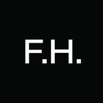
FRITZ HANSEN
Casa de design escandinavo dinamarquesa desde 1872.
ARCHITECTURAL DIGEST
Revista global de design e arquitetura desde 1920.
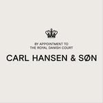
CARL HANSEN & SØN
Marceneira dinamarquesa que fabrica Wegner desde 1908.
@carlhansenandson
DK · 1908
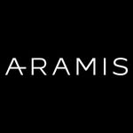
ARAMIS
Moda masculina premium brasileira fundada em 1985.
DEVOL KITCHENS
Cozinhas sob medida premium britânicas fundada em 1989.
02
Marca-âncora · 01 de 07 · Andreia · 31% do feed
POST REAL · INSTAGRAM
"Inside my Tribeca Reno." Caption como crônica de capítulo permanente, não post avulso.
EYESWOON
Estúdio de interiores e cookbooks de Athena Calderone.
@eyeswoon · NY · 1.1M followers
A fundadora vira editora.
Athena Calderone aparece em 1 de cada 3 posts do feed dela sem virar perfil pessoal. Cada aparição entra em um Highlight nomeado e vira capítulo permanente do acervo.
HIGHLIGHTS NOMEADOS
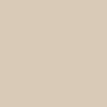
TRIBECA
RENO

AC × JH

AD
PADRÃO DAS HEADLINES
"Inside my Tribeca Reno."
"AC × JH · The Hudson House."
"At home with the atelier."
O GESTO
Headline sempre em primeira pessoa com distância editorial. Cada post alimenta um Highlight, nunca fica solto. O acervo de capítulos cresce postagem a postagem.
O QUE EVOCA
"Ela vive uma vida que merece ser arquivada." Quem segue não consome novidade, acompanha narrativa. Fundadora protagonista, zero "look of the day".
TRADUÇÃO PRA IMPERADOR HOME DESIGN
A Andreia já carrega 31% do feed (19 aparições em 2026). É o ativo mais escalável que a marca tem hoje. Mas cada post fica solto, sem virar acervo. A oportunidade: transformar essas aparições em capítulo permanente, com critério de inclusão e arquivamento. Cada território à frente propõe um jeito diferente de fazer isso.
02
Marca-âncora · 02 de 07 · Produto/Ambiente · 36% do feed
POST REAL · INSTAGRAM
"PUIFORCAT × APPARATUS." Template fixo de parceria, foto sempre ambiental.
APPARATUS
Estúdio de iluminação curatorial em Nova York.
@apparatusstudio · NY · 244K followers
Produto nunca aparece sozinho.
Estúdio que vende lustres de US$ 30.000 e nunca posta produto isolado. Cada peça entra em uma de duas gramáticas tipográficas fixas. Foto sempre ambiental, nunca catálogo.
TEMPLATES DE POST
"IN BOOK · AD ITALIA"
"PUIFORCAT × APPARATUS"
"IN BOOK · ARCHITECTURAL DIGEST"
O GESTO
Dois templates fixos: "IN BOOK · [REVISTA]" (press) ou "[PARTNER] × APPARATUS" (colaboração). Mesma serifa caps centralizada. Hierarquia rígida. Validação externa faz o trabalho de venda.
O QUE EVOCA
"Eles fazem peças de coleção, não de vitrine." A marca não pede pra ser vista, mostra que outros já viram primeiro.
TRADUÇÃO PRA IMPERADOR HOME DESIGN
Produto/ambiente é a pauta dominante do feed (22 posts/ano, 36%). Hoje cada peça aparece isolada, sem referência cruzada ao material, ao projeto ou ao cliente. A oportunidade: criar um sistema que conecte cada peça à história maior. Cada território à frente propõe um jeito diferente de estruturar essa conexão.
02
Marca-âncora · 03 de 07 · Evento · 13% do feed
POST REAL · INSTAGRAM
"A Space for Bold Ideas." Série de branding com tipografia editorial sobre foto ambiental.
FRITZ HANSEN
Casa de design escandinavo dinamarquesa desde 1872.
@fritzhansen · DK · desde 1872
Evento é peça gráfica, não flyer.
Marca de 154 anos que podia comunicar evento de forma institucional. Em vez disso, trata cada evento como peça editorial permanente. O convite tem valor de arquivo.
PADRÃO DE EVENTOS
"A Space for Bold Ideas"
"Sound Club · 3daysofdesign"
"Fritz Hansen at Salone"
O GESTO
Caps sans bold sobreposto a foto editorial do produto-ícone (aqui a Egg Chair). Uma frase, sem subtítulo, sem ornamento. O mesmo gabarito reaparece em convite de evento com mais camadas (programa, data, endereço), sempre legível, sempre arquivável.
O QUE EVOCA
"Esse evento vai entrar pra história da marca." O convite carrega peso de arquivo e fica salvo, em vez de descartado depois da data.
TRADUÇÃO PRA IMPERADOR HOME DESIGN
Eventos somam 13% do feed (8 posts/ano), com a inauguração do novo prédio em outubro como acontecimento de peso. Hoje aparecem com linguagem de varejo, sem virar marcador histórico da marca. A oportunidade: tratar cada evento como capítulo arquivável. Cada território define o formato visual e o vocabulário desse arquivo.
02
Marca-âncora · 04 de 07 · Convidado · 7% do feed
POST REAL · INSTAGRAM
Open Door · feature de convidado em casa. Foto editorial, nome próprio na headline.
ARCHITECTURAL DIGEST
Revista global de design e arquitetura, fundada em 1920. Série Open Door faz tours editoriais em casa.
@archdigest · US · 4.5M followers
A casa do convidado vira capítulo.
Revista global de arquitetura e design. Cada feature da série "Open Door" leva o leitor pela casa do convidado em ensaio editorial completo. O convidado entra no acervo da revista pela porta da sala.
PADRÃO DE FEATURES · SÉRIES RECORRENTES
"Open Door: [Nome]"
"Inside [Nome]'s [Cidade] Home"
"Tour [Nome]'s [Loft / Apartment / Studio]"
O GESTO
Série recorrente nomeada (Open Door) com formato fixo: foto editorial do convidado em casa, nome próprio na headline, tour da arquitetura interior. Cada feature vira capítulo permanente do acervo da revista.
O QUE EVOCA
"O convidado é tão importante quanto a revista." Nome próprio na headline, casa como protagonista, tratamento de capa. Convidado eternizado.
TRADUÇÃO PRA IMPERADOR HOME DESIGN
A Imperador trabalha com marceneiros, artesãos, fornecedores e arquitetos parceiros, mas só 4 posts/ano hoje (7%) trazem essas vozes ao feed. A oportunidade: ampliar a presença de quem está fora da loja e construir reciprocidade de audiência, relevante para o Programa Arquiteto Parceiro. Cada território decide o tom e o formato da citação.
02
Marca-âncora · 05 de 07 · Gerência · 7% do feed
POST REAL · INSTAGRAM
"BALANCED PRINCIPLES · 3daysofdesign." O ofício da marca virou texto sobre a própria peça.
CARL HANSEN & SØN
Marceneira dinamarquesa que fabrica Wegner desde 1908.
@carlhansenandson · DK · desde 1908
A operação vira protagonista.
Marceneira de 117 anos que fabrica Wegner desde 1949. Quando a marca comunica gerência (programa, evento, time), aplica a mesma disciplina tipográfica do resto do feed. O bastidor é editorial.
HIGHLIGHTS NOMEADOS
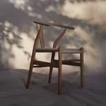
MAKING
AN ICON
PROGRAMAS NOMEADOS
"BALANCED PRINCIPLES · 3daysofdesign"
"Making An Icon"
"NOTES ON · [tema]"
O GESTO
Programa anual nomeado (BALANCED PRINCIPLES) ganha o mesmo tratamento tipográfico que um produto-âncora. Sem selfie da equipe. Sem "amamos o que fazemos". A operação aparece pelo trabalho que produz.
O QUE EVOCA
"Aqui tem gente cuidando do que vendem." O cliente sente que cada peça passou por uma mão específica. Vale o preço porque vale a história.
TRADUÇÃO PRA IMPERADOR HOME DESIGN
Rafael (gerente), marcenaria parceira e equipe de instalação aparecem em 4 posts/ano (7%), hoje em fotos corporativas anônimas. A oportunidade: nomear quem faz a casa funcionar, transformando equipe em rosto reconhecível pelo cliente. Reforça a sensação de cuidado artesanal por trás do produto. Cada território decide como nomear.
02
Marca-âncora · 06 de 07 · Promocional · 3% do feed
PEÇA DE DIVULGAÇÃO · NOVEMBRO 2025
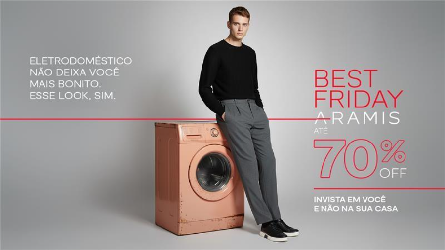
Homem em alfaiataria Aramis encostado em máquina de lavar surrada. Headline "BEST FRIDAY" e percentual "ATÉ 70% OFF" coexistem com a provocação editorial.
SOBRE ESTE REGISTRO
A Aramis arquivou os posts da campanha no grid depois de novembro 2025 pra liberar espaço pra Natal e coleções 2026. A imagem aqui vem da divulgação oficial à imprensa (Marcas Mais, Aurora Cultural). Resultado confirmado pela própria marca: "maior Black Friday da história" (Mapa das Franquias).
ARAMIS
Moda masculina premium brasileira fundada em 1985.
@aramisoficial · BR · 522K followers
Black Friday rebatizada de Best Friday.
Em novembro de 2025 a Aramis lançou "Best Friday Aramis · Invista em você, e não na sua casa". Percentual existe ("até 70% off"), mas vive embaixo da headline, não é o assunto. A frase comercial fica em segundo plano. A provocação editorial é o primeiro plano. Resultado: maior Black Friday da história da marca.
CONCEITO VISUAL
Homem em alfaiataria Aramis encostado em máquina de lavar surrada. Headline "BEST FRIDAY" em sans branca. Percentual "ATÉ 70% OFF" abaixo da headline, em escala menor. Hierarquia: provocação em cima, oferta em baixo.
COPY DA PEÇA
"BEST FRIDAY"
"Eletrodoméstico não deixa você mais bonito. Esse look, sim."
"Invista em você e não na sua casa"
O GESTO
Renomeia o momento (Best, não Black). Hierarquia visual subverte o varejo: headline editorial em cima, percentual embaixo. Mídia programática hackeia buscas de "Black Friday eletrodoméstico" no Google e devolve "Nessa Black Friday, gaste com você".
O QUE EVOCA
Investimento, não consumo. Quem compra sente que está se valorizando, não economizando. O comercial continua intacto, sem nunca virar varejo. Resultado financeiro: recorde de vendas.
TRADUÇÃO PRA IMPERADOR HOME DESIGN
A Imperador faz 2 promoções/ano (3% do feed), hoje no formato "SHOWROOM 70% OFF" que entra em conflito com o reposicionamento premium. A oportunidade: manter o comercial vivo sem importar a linguagem agressiva de varejo. A hierarquia inverte (marca acima, oferta abaixo), mas cada território decide o headline, o tom e o tratamento visual.
02
Marca-âncora · 07 de 07 · Projeto entregue · 2% (MAIOR ALAVANCA)
POST REAL · INSTAGRAM

Projeto entregue, foto editorial em luz baixa, caption como reportagem. Cada cozinha vira mini-série de posts.
DEVOL KITCHENS
Cozinhas sob medida premium britânicas fundada em 1989.
@devolkitchens · UK · est. 1989
A operação exata proposta.
Retailer britânico de cozinhas sob medida. Cada projeto entregue ganha nome próprio (pelo local da casa) e vira mini-série editorial: três a seis posts mostrando ambiente, detalhes, luz. É a operação que propomos para a Imperador Home Design.
MINI-SÉRIE EDITORIAL
Cada cozinha entregue rende 3 a 6 posts sequenciais. Primeiro post mostra o ambiente. Depois zoom em detalhes (torneira, tampo, vigas). Mesmo projeto reaparece por semanas. Audiência segue para ver a próxima entrega.
PADRÃO DE CAPTION
"The Shaker kitchen at Cotes Mill."
"Our latest project..."
"A few more photos of the kitchen..."
O GESTO
Caption nomeia o lugar: "The Shaker kitchen at Cotes Mill." Fotografia em luz baixa, prosa de revista de casa. Convite ao showroom como assinatura, e-mail discreto pra agendar projeto. Nunca "compre agora".
O QUE EVOCA
"deVOL tem audiência de casa, não de cozinha." Cada projeto entregue vira reportagem visual. Audiência segue para ver as próximas. O comercial acontece no showroom, não no feed.
TRADUÇÃO PRA IMPERADOR · MAIOR ALAVANCA DA MARCA
Projeto entregue ocupa só 2% do feed hoje (1 post/ano), mas é onde está a maior alavanca de marca premium. Cada casa entregue é prova concreta + matéria-prima para mini-série editorial. Projeção: em 5 anos, 60 casas viram 300 posts arquivados, Cianorte vira mapa afetivo. Cada território decide como nomear, fotografar e arquivar cada casa.
02
Síntese · O que todas as 7 marcas-âncora têm em comum
CÓDIGO COMUM · 4 OPERAÇÕES
O aval premium é uma soma de gestos.
Athena Calderone, Apparatus, Fritz Hansen, Architectural Digest, Carl Hansen, Aramis e deVOL Kitchens vendem coisas diferentes, mas operam o mesmo código. Quatro gestos que se repetem. Eles formam o aval premium que os 3 territórios da Imperador Home Design vão traduzir cada um a seu modo.
Disciplina tipográfica
A família tipográfica não muda, a hierarquia também não. Apparatus e Fritz Hansen fazem o feed com duas fontes e três pesos. O cliente reconhece a marca antes de ler o texto.
PRA IMPERADOR HOME DESIGN
Adicionar consistência visual.
Nome próprio sobre adjetivo
Nada de "linda peça". Sempre "MARCEL", "Cotes Mill Kitchen", "Open Door · Tom Ford", "Tribeca Reno". Apparatus nomeia produto, deVOL nomeia projeto, AD nomeia anfitrião. Adjetivo é genérico, nome próprio é autoral.
PRA IMPERADOR HOME DESIGN
Adicionar autoria nomeada.
Código de série permanente
Cada post pertence a uma série maior: mini-série editorial, nome do projeto, código de data. EyeSwoon tem TRIBECA RENO, deVOL tem THE COTES MILL KITCHEN, AD tem OPEN DOOR. Post solto vira post arquivado.
PRA IMPERADOR HOME DESIGN
Adicionar camada de série permanente.
Gramática editorial, não comercial
"Invista em você" no lugar de "Compre agora". "Open Door" no lugar de "Conheça nosso projeto". Aramis e AD provam: escrita vem de revista. CTA pertence a outro canal, fora do feed editorial.
PRA IMPERADOR HOME DESIGN
Adicionar voz curatorial.
CONCLUSÃO · ONDE A IMPERADOR HOME DESIGN ENTRA
Esses 4 códigos formam o piso comum de qualquer marca premium em redes sociais. Os 3 territórios a seguir traduzem os 4 códigos cada um a seu modo: cada território é um jeito diferente de aplicar a mesma disciplina nas 7 pautas do feed.
03
Ato 03 de 03 · Decisão
Imperador Home Design
Três territórios.
Três leituras proprietárias da mesma estratégia. Cada um carrega tipografia, paleta, glifo de assinatura e disciplina próprios. Nenhum herda de outro. Os três passam pelas mesmas seis regras e ativam a Marca em uma página de jeitos diferentes.
Ato 01 · Antes
Auditoria
Seis observações sobre o feed atual, observação por observação.
Ato 02 · Antes
Brief estratégico
Marca em uma página, oito componentes, seis regras de julgamento.
Ato 03 · Agora
Três territórios
Três leituras proprietárias da mesma estratégia, julgadas pelas mesmas regras.
03
Ato 03 · Três territórios, três respostas sobre o rosto da marca
Três nomes.
Três respostas. Uma escolha.
Cada território se ancora em um trunfo único da Marca em uma página. E cada um responde de um jeito diferente ao fato de a Andreia já ser o rosto da marca em 31% dos posts. Cobertura sem repetição entre os três.
Território 01 · NOMEIA
REG · CIA
A marca como registro vivo das casas que a Imperador ajudou a montar. Cada casa ganha número, ficha, nome.
A ficha nomeia. O rodapé da peça registra "Curadoria: Andreia Silva · Atendimento: [Gerente]". O brand book formaliza no papel o que a operação já faz na surdina.
FICHA · Nº 023
Família Marcos · mai/2026
Curadoria · Andreia Silva
Atendimento · [Gerente]
DEPENDE DA ANDREIA · BAIXO
OPERAÇÃO IMEDIATA · ALTA
Ancorado no trunfo
Atendimento que reconhece
Território 02 · ASSINA
Quadro · Outono 26
A marca como oficina pessoal da curadora. Amostras, anotações, escolha em primeira mão na luz da tarde.
A assinatura "A." é a Andreia. Se o gerente também é rosto público, ele ganha uma assinatura paralela na mesma família e funciona como segunda assinatura no quadro de seleção.
Aprovado em quadro
Sofá Família Marcos
A. G.
DEPENDE DA ANDREIA · ALTO
EXIGE DECISÃO DELA SOBRE EXPOSIÇÃO
Ancorado no trunfo
Curadoria com rosto
Território 03 · RECUA
Casa 023 · luz da tarde
A marca como interior habitado em fotografia. A tipografia recua, a casa fala primeiro.
Os rostos saem. A fotografia ambiente entrega a presença. Esse território é o mais compatível com o feed atual (36% já é sem rosto) e o que menos depende da Andreia.
Ao entardecer
Sala Família Marcos
·
Sem rosto, sem nome.
Só a luz da tarde.
DEPENDE DA ANDREIA · BAIXO
EXIGE QUALIDADE FOTOGRÁFICA · ALTA
Ancorado no trunfo
Casa que recebe·
PERGUNTA-CHAVE PARA A ANDREIA
Você quer continuar como rosto da marca daqui pra frente? A resposta calibra o peso dos três. "Sim" eleva O Ateliê. "Depende" favorece O Arquivo. "Não" favorece A Casa Aberta.
Território 01 de 03 · Capítulo
Nº 01Acervo · CIA
O Arquivo.
A marca como registro vivo das casas que a Imperador Home Design ajudou a montar. Cada casa entra no acervo com número, ficha, nome e curadoria assinada. O cliente é parte da história da loja.
Ancorado em
Trunfo · Atendimento que reconhece. Valor · Cliente acima da transação.
O que tem neste capítulo · 09 entradas
01Mood board
02Assinatura · Nº
03Paleta · 5 cores
04Tipografia · 3 faces
05Disciplina · 5 artigos
06Opções de logo · 3 com coroa
07Antes/depois · perfil
08Antes/depois · post
09Aplicação ampliada · 3 posts
01
O Arquivo · Mood board · O mundo visual
O acervo que recebe sem cerimônia.
CARTONADO
FOUNDER-LED
BRASS DETALHE
Acervo de uma vida. Ficha em papel cartonado, clipe brass na ponta, assinatura à tinta marrom no rodapé. O acervo aqui é da família, não do estado. Recebe sem formalidade, mas registra com nome.
Nogueira · Estrutura
Bordas, filetes, ancoragem.
#3D2418
Osso · Papel cartonado
Fundo do acervo. Nunca branco clínico.
#EDE4D3
Nº023
Libre Caslon · Mono
Brass · Detalhe
Clipe, sigla, número. O metal que persiste.
#C9A677
Surface · ficha 023
Nº023 · Família Marcos
Reforma de sala e jantar.
CIANORTE · MAIO 2026
Terracota · Acento
Único saturado. Códigos críticos, CTAs.
#A55A3F
01
O Arquivo · Por que essas cores
CATÁLOGO DE CORES · 05 ENTRADAS
Acervo que recebe sem afastar.
Cinco cores catalogadas. Cada uma com função declarada e quota de presença. Nada acidental, nada sobra.
Nº 01 · ESTRUTURA · 35% PRESENÇA
Nogueira
#3D2418
RGB 61·36·24
Prateleira de arquivo bem feito. Estrutura, autoridade discreta, ancoragem visual. Madeira que recebe, não institucional.
Nº 02 · FUNDO · 40% PRESENÇA
Osso
#EDE4D3
RGB 237·228·211
Papel cartonado de acervo familiar. Remove glare e diz "isto é documento, não feed". Está guardado.
Nº 03 · DETALHE · 10% PRESENÇA
Brass
#C9A677
RGB 201·166·119
Clipe que segura, sigla que recorre, número que persiste. O metal que aparece em cada ficha, lembrando registro.
Nº 04 · ACENTO · 5% PRESENÇA
Terracota
#A55A3F
RGB 165·90 · 65
Único saturado, racionado a códigos críticos e CTAs. Substitui o dourado sem repetir o vocabulário hoteleiro.
Nº 05 · TEXTO · 10% PRESENÇA
Tinta
#1A1410
RGB 26·20·16
Mais macia que preto puro, próxima da tinta impressa. Default da pilha de texto. Sem fadiga em ficha longa.
01
O Arquivo · Por que essas fontes
ESPÉCIME · TIPOGRÁFICO · 03 FACES
Três famílias, três papéis claros.
Cada face com função declarada: voz do registro, texto longo, código. Quem lê uma ficha sabe imediatamente o que está olhando.
Face 01
Libre Caslon
Italic · 700
A casa que dura ganha número.
Voz do registro. Serifa de acervo familiar com calor. Carrega autoridade sem peso institucional.
Face 02
Inter
Regular · 400
Casa Nº 023 · Família Marcos · Jardim Floresta · Cianorte. Reforma integral em maio de 2026. Curadoria assinada por Andreia Silva.
Texto longo. Sans neutro para descrição de projeto e memorial. A fonte some, o conteúdo aparece.
Face 03
JetBrains Mono
Medium · 500
REG · CIA · 2026 · 023
Nº 023 · 04 / 06 · ACERVO ATIVO
Códigos. Mono para dados operacionais: registro, catálogo, datas. Precisão de registro.
01
O Arquivo · Disciplina · cinco regras por superfície
REGULAMENTO DO ACERVO · 05 ARTIGOS
Cinco regras que vão para o brand book.
Disciplina escrita como artigo de regulamento. Cada artigo tem regra, tolerância e antinomia. Permanece no brand book.
Art. 01
Saturação
Terracota é o único saturado.
Teto ≤ 60% HSL · exceção: #A55A3F
Nogueira, osso, brass e tinta ficam abaixo do teto. Terracota racionada para códigos críticos e CTAs. Layout testa em cinza antes da cor entrar.
Art. 02
Espacial
Margem de ficha de arquivo.
Margem ≥ 1/8 da largura · grid 8pt
Margem generosa em todo registro, como ficha catalogada. Espaço para o clipe brass projetar para fora da página. Hierarquia respira.
Art. 03
Balanço
Assimétrico, registro à esquerda.
Layout 2/3 + 1/3 · ancorado à esquerda
Cabeçalho de registro sempre à esquerda, conteúdo à direita. Layout simétrico não permitido. O acervo aceita assimetria.
Art. 04
Deployment
Nºsempre antes do número.
Mínimo 3 usos do glifo por superfície
O marcador aparece três vezes ou mais em cada peça: wordmark, ficha principal, rodapé. Mantém o acervo presente, sem virar decorativo.
Art. 05
Anti-trope · recusar
O que O Arquivo NÃO é.
7 recusas concretas · zero tolerância
Recusar: brasão dourado de hotel cinco estrelas. Coroa real de perfumaria de luxo. Estética vitoriana de sebos. Pasta amarela de repartição pública. Mobiliário pesado de Líder Interiores. Catálogo de Etna ou Tok&Stok. Tipografia serifa rígida tipo Boutique do Móvel.
01
O Arquivo · Elemento de assinatura
FICHA · ASSINATURA · 01
O "Nº" como marca recorrente.
Marcador tipográfico que abre cada projeto, ficha e referência do acervo. Lê como ficha de acervo com calor: organizado, datado, com nome.
ESPÉCIME · 01/01
MONO BRASS · 100% PRESENÇA
FACE · JETBRAINS MONO
PESO · 500
TRACKING · 0.04EM
Regras de uso · 03
01
Tamanho. No tamanho da maiúscula do texto vizinho. Nunca maior, nunca menor.
02
Cor. Sempre em brass (#A55A3F). Nunca em tinta, nunca em nogueira.
03
Companhia. Nunca aparece sem número à frente. Nunca substitui pontuação comum.
Aplicações · 05
WORDMARK
NºImperador Home Design
FICHA
Nº023 · Família Marcos
FOOTER
Acervo · Nº 001 – 023
POST
Nº023 entrou hoje no acervo.
ETIQUETA
Nº023 · Sofá em linho cru · Sala
01
O Arquivo · Onde o "Nº" aparece · 8 superfícies
FICHA · ASSINATURA · 01
O "Nº" aparece em 8 superfícies.
Mesma face, mesma cor, mesma regra de companhia. Cliente reconhece o gesto em qualquer superfície da marca: é casa que cataloga.
01 · Wordmark
Logo da marca
02 · Bio · stat
Stat do perfil
03 · Highlight
Highlight nomeado
04 · Post · anfitriã
Anfitriã · N. 047
Andreia Silva
Overlay de post · pessoa
05 · Post · ficha
N. 024
Sofá em linho cru
Taupe · 320 cm
Overlay de post · peça
06 · Post · projeto
CASA N. 023 · ABR 26
Família Marcos
Overlay de post · casa
07 · Etiqueta física
Etiqueta · sala
Nº023 · Sofá linho
Tag no produto vendido
08 · Material code
Código de amostra
01 Tamanho. Maiúscula do texto vizinho.
02 Cor. Brass #A55A3F sempre.
03 Companhia. Número à frente, nunca solto.
JetBrains Mono5000.04em
01
O Arquivo · Antes e depois · perfil @imperadorhomedesign
O acervo substitui a vitrine.
Antes · perfil atual
imperadorhomedesign
1.681 posts
10,4 mil seguidores
Imperador Home Design
👑 Há 14 anos transformando lares com design, conforto e exclusividade.
🌟 Seu ambiente, sua história, nossa paixão. ❤️
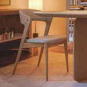
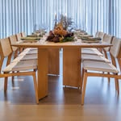
Screenshot real de @imperadorhomedesign. Avatar com coroa, bio com vocabulário importado de exclusividade, feed em grade fechada.
Depois · O Arquivo
imperadorhomedesign
023 casas
1.681 posts
10,4 mil seguidores
Imperador Home Design
Acervo vivo de casas. Cianorte · Maringá · Umuarama.
14 anos catalogando. Curadoria assinada por Andreia Silva.
imperador.com.br/acervo
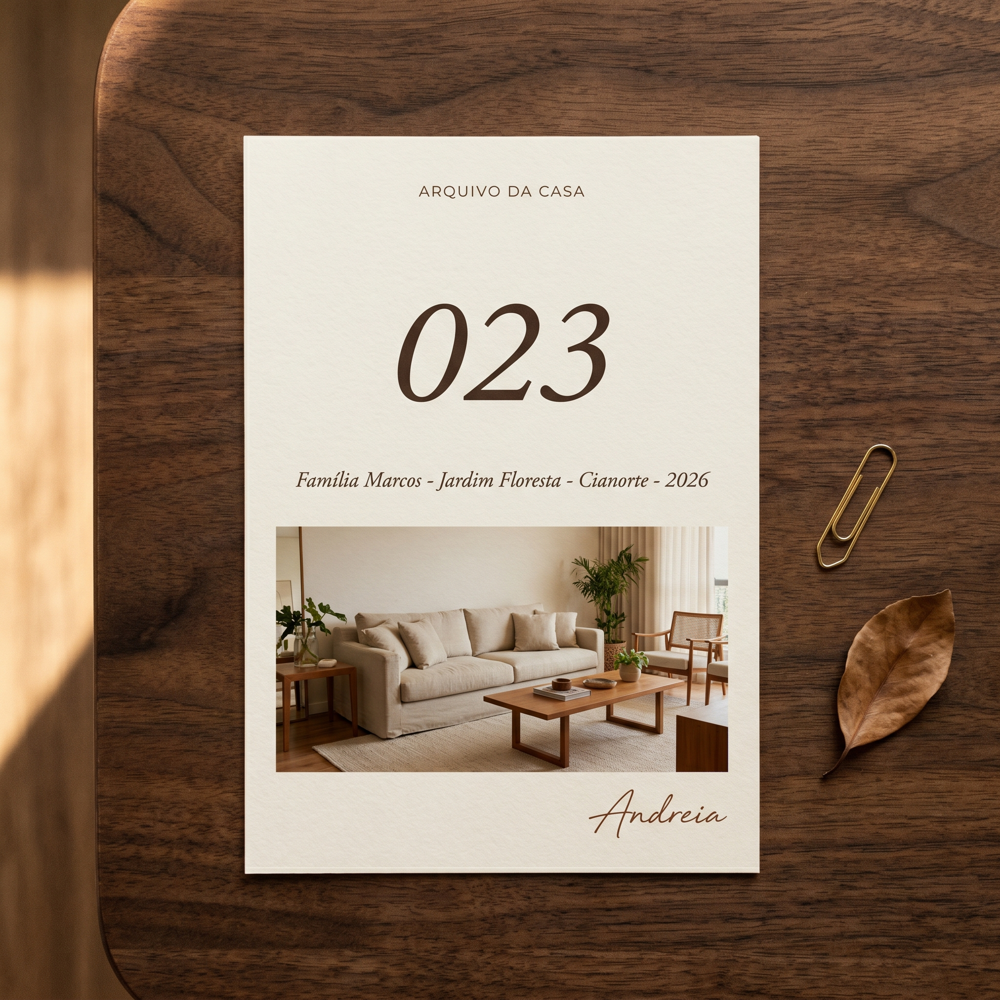
MATERIAL · LC.07
Linho cru
aprovado.
Mesma estrutura de perfil. A diferença é a gramática do conteúdo: cada peça aparece com selo de projeto onde foi instalada (Nº 022, Nº 023, Nº 020), intercalada por fichas editoriais e cards do acervo. O arquivo organiza o produto, não esconde.
01
O Arquivo · Modelos de overlay · 4 templates
SISTEMA EDITORIAL · 4 MODELOS
Quatro modelos. Sete entradas.
Cada uma das 7 categorias do feed usa um dos 4 templates abaixo. Mesma gramática: Libre Caslon para nome próprio, JetBrains Mono para código, paleta paper-2 com accent brass.
Papel · N. XXX
Nome Próprio
Eyebrow. Mono caps · papel + Nº.
Nome. Libre Caslon 13–14pt.
Lugar. Bottom-left · 10px margem.
Usado em. Andreia, Produto, Convidado, Gerência.
02 · CARIMBO
~13% DO FEED
Carimbo. Brass · top-right.
Data. Mono em DD·MMM·AAAA.
Nome. Serifa bottom-left.
Usado em. Evento.
Edição · Novembro
A Casa que Dura
12 peças · até 30%
Rejeita. Banner 70% off varejo.
Aceita. Headline editorial dominante.
Permite. % off em mono subordinado.
Usado em. Promocional · regra Aramis.
04 · TÍTULO
2% · MAIOR ALAVANCA
CASA N. 023 · ABR 26
Família Marcos
Jardim Floresta
Eyebrow. Mono caps centralizado.
Nome. Libre Caslon 22pt centro.
Fundo. Gradient 35–100% escuro.
Usado em. Projeto entregue.
01
O Arquivo · Aplicação visual · 4 modelos em 7 categorias
SISTEMA EDITORIAL · 7 ENTRADAS
Os 4 modelos aplicados em foto real.
Cada categoria recebe um dos 4 templates do slide anterior. CARD, CARIMBO, REFRAME ou TÍTULO. A foto sempre é o hero.
01 · Andreia · CARD31% · 19
Anfitriã · N. 047
Andreia Silva
Card de assinatura. Papel no acervo, não rosto.
02 · Produto · CARD-FICHA36% · 22
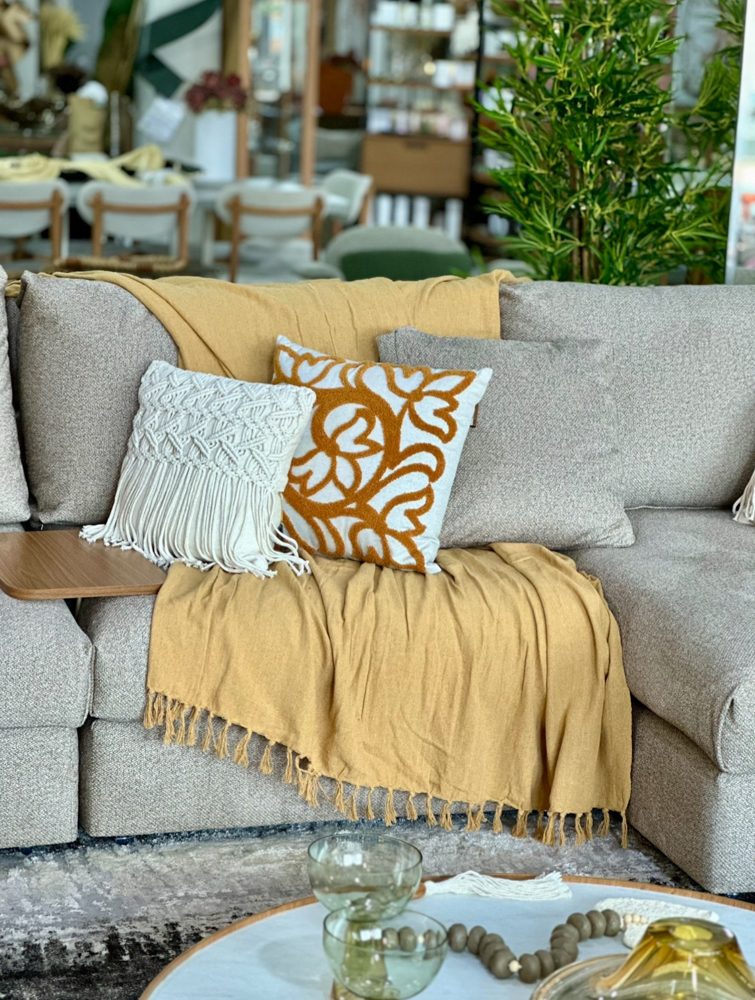
N. 024
Sofá em linho cru
Taupe · 320 cm
Marcenaria Silva · SP
Ficha técnica. Material, medida, fornecedor.
03 · Evento · CARIMBO13% · 8
Brunch dos parceiros
Cianorte · Encontro Nº 031
Carimbo grande. Data é a manchete do post.
04 · Convidado · CARD7% · 4
Em diálogo com
Marceneiro Silva
Oficina · Maringá
Card de parceiro. Ofício e endereço.
05 · Gerência · CARD7% · 4
Da equipe
Nome do colaborador
Cargo · Imperador CIA
Card de equipe. Nome e cargo.
06 · Promo · REFRAME3% · 2
Edição · Novembro 2026
A Casa que Dura
12 peças selecionadas · até 30%
Reframe. Editorial dominante, percentual subordinado.
07 · Projeto · TÍTULO2% · MAIOR ALAVANCA
CASA Nº 023 · ABR 2026
Família Marcos
Jardim Floresta · Cianorte · 7 meses · 184 dias
Título centralizado. Gradient escuro. Span 2 colunas — abre mini-série de casa entregue.
01
O Arquivo · Aplicação física · onde o sistema sai do feed
APLICAÇÃO FÍSICA · 6 SUPERFÍCIES
O sistema também vive em papel, tecido e vidro.
A loja física é o primeiro território da marca. Os 4 modelos de overlay aplicam-se nas mesmas regras em fachada, cartaz, etiqueta, sacola, cartão e folder. A gramática é a mesma. O substrato muda.
01 · FachadaSinalização externa
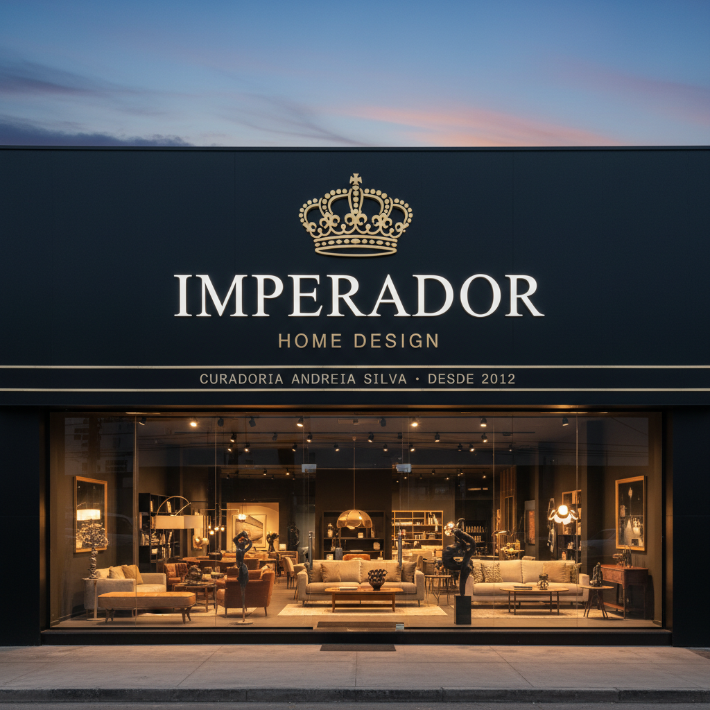
Logo + selo. Identifica a casa na rua.
02 · CartazModelo 04 · TÍTULO
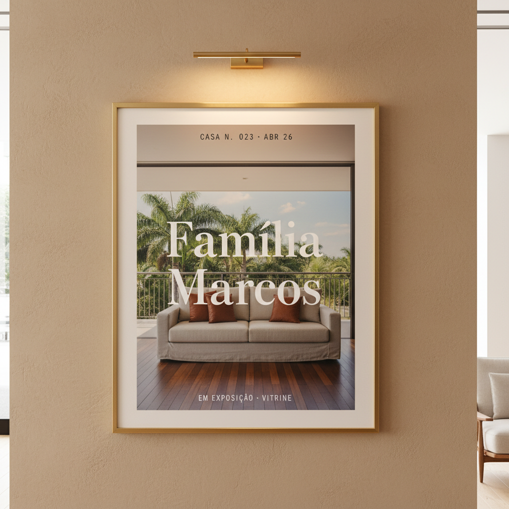
Pôster A2. Capa editorial da última casa entregue.
03 · EtiquetaModelo 01 · FICHA
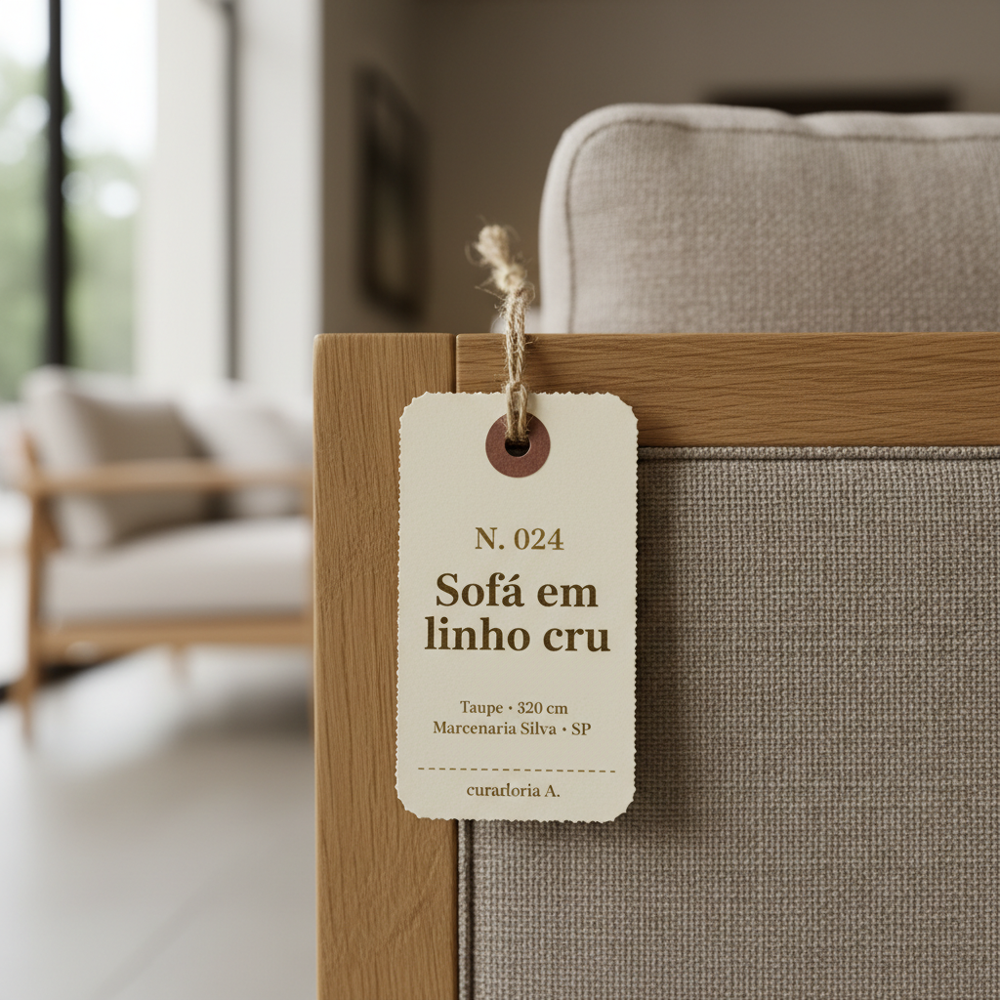
Tag de papel. Amarrada na peça do showroom.
04 · SacolaEmbalagem premium
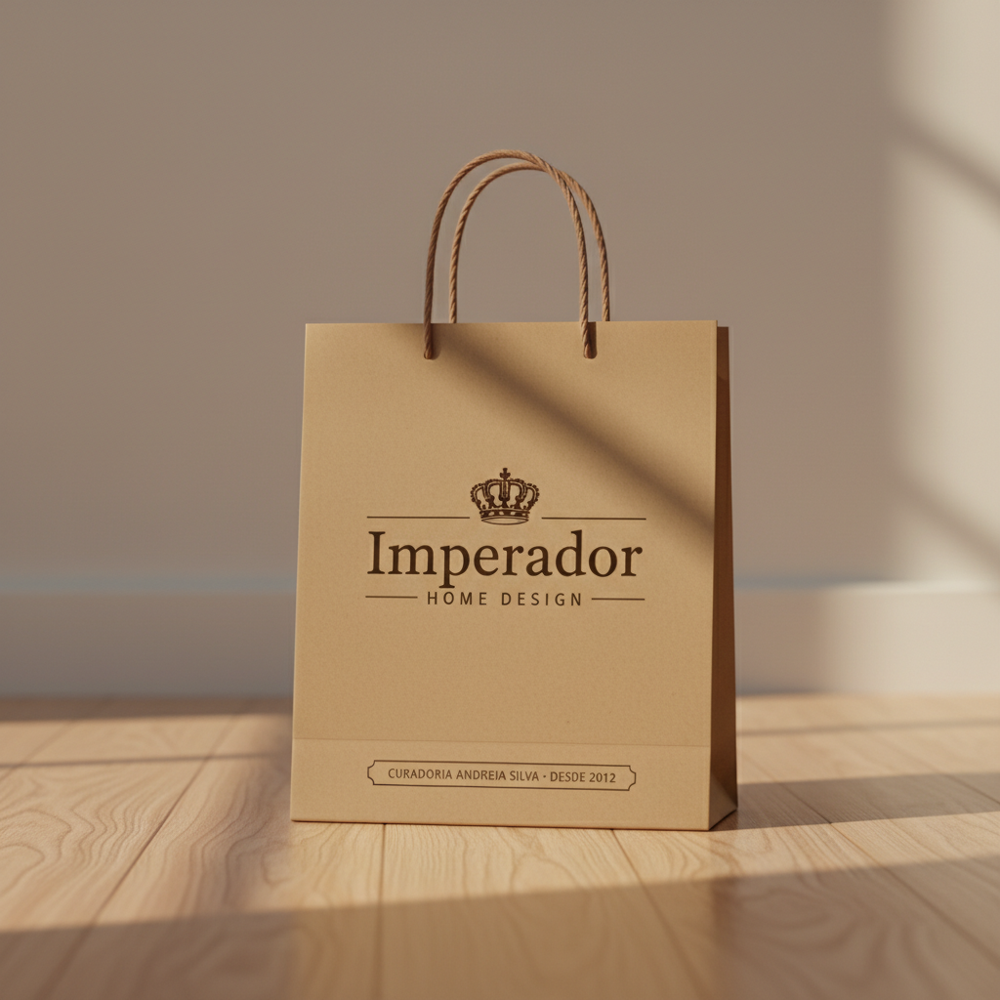
Kraft natural. Cliente leva para casa.
05 · CartãoModelo 01 · CARD
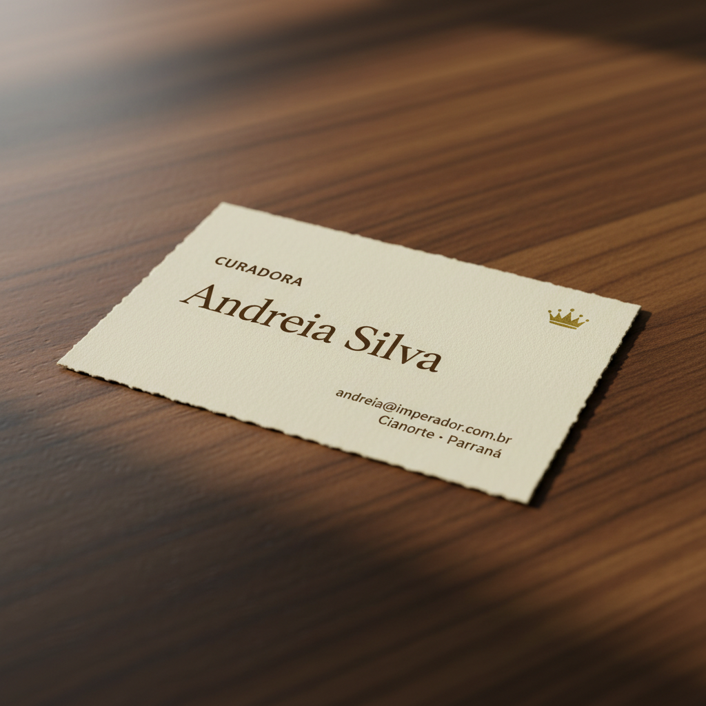
85×55mm. Andreia em primeira pessoa.
06 · FolderCatálogo da estação
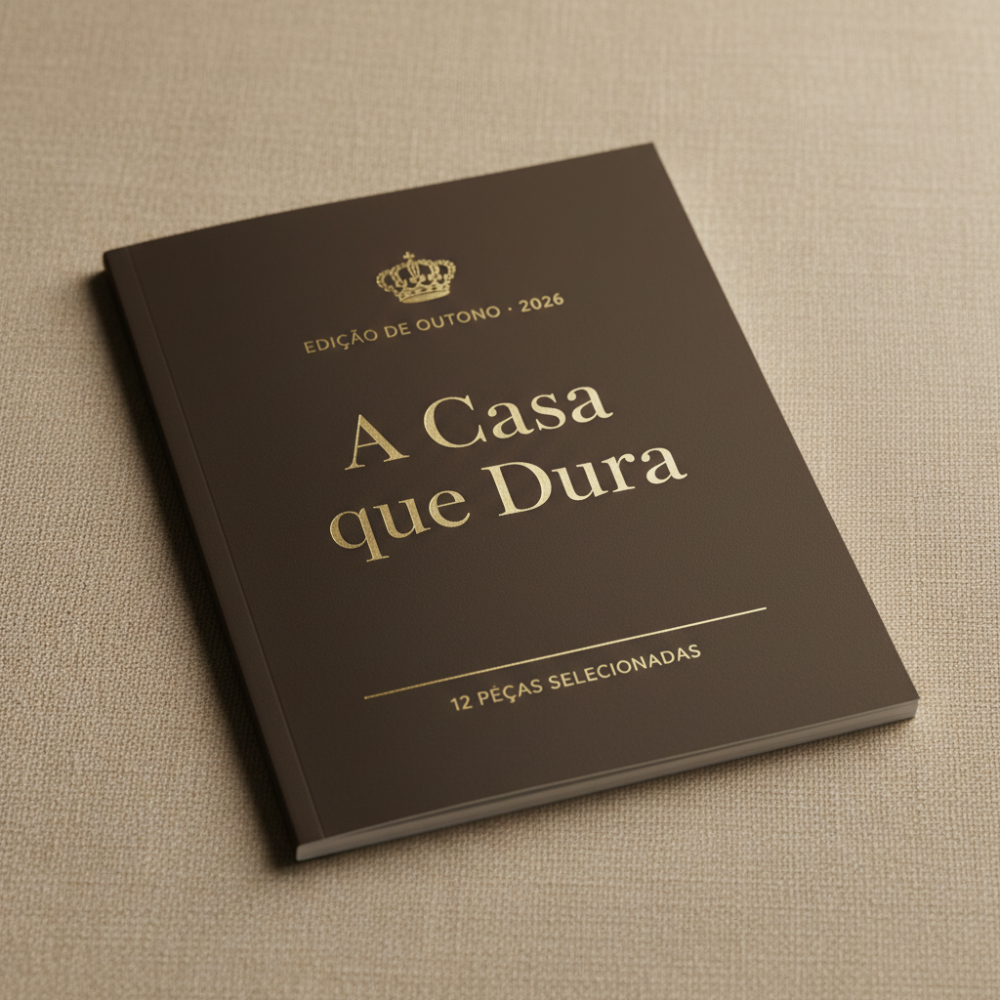
Guia A5. Curadoria sazonal entregue na mão.
PRIORIDADE DE PRODUÇÃO · INAUGURAÇÃO OUT 2026
Fachada e cartaz devem estar prontos antes da abertura. Etiqueta e cartão podem ser implementados gradualmente. Sacola e folder são alta visibilidade, baixa urgência — pode entrar na fase 2.
01
O Arquivo · Opções de marca · refino tipográfico + camadas editoriais
Coroa intacta. Libre Caslon no wordmark.
A coroa permanece igual. Cores idênticas. O wordmark migra para Libre Caslon Text, serifa editorial de peso clássico, conversa com a voz de jornal antigo do território. Distinta da EB Garamond do Ateliê e da Fraunces da Casa Aberta.
Opção A · Refino tipográfico v1.0 · RECOMENDADA
Logo atual · Libre Caslon Text
Coroa intacta. Cores intactas. Wordmark migra para Libre Caslon Text, serifa editorial com peso clássico, voz de revista impressa.

Imperador
Home Design
Vence: mínima disrupção. Cliente percebe "ficou mais limpo" sem perceber que mudou. 14 anos de marca preservados.
Dobra: mudança quase imperceptível. Em escala pequena pode parecer que nada foi feito.
Opção B · Selo da curadora
Logo Libre Caslon + selo da curadora
Wordmark em Libre Caslon Text. Coroa e cores intactas. Acrescenta selo discreto com nome da curadora e ano de fundação.
Imperador
Home Design
Curadoria Andreia Silva · desde 2012
Vence: logo intacta. O nome da curadora vira parte da assinatura institucional, aparece em sacola, ficha, etiqueta.
Dobra: personaliza a marca em torno da Andreia. Se ela sair da operação, o selo precisa ser refeito.
Opção C · Linha + assinatura
Logo Libre Caslon + cabeçalho de jornal
Wordmark em Libre Caslon Text. Coroa intacta. Acrescenta linha horizontal + tagline "Cianorte · desde 2012". Lê como ficha catalográfica.
Imperador
Home Design
Vence: institucionalidade sem alterar a logo. Voz de cabeçalho de jornal antigo, alinhada com O Arquivo.
Dobra: mais elementos pra administrar. Em fachada e papelaria precisa de posicionamento cuidadoso pra não parecer datado.
Território 02 de 03 · Capítulo
02Quadro de seleção
O Ateliê.
A marca como oficina pessoal da curadora. Quadro de seleção, mão da Andreia escolhendo, anotações em caderno de campo. O cliente entra no bastidor da escolha.
Ancorado em
Trunfo · Curadoria com rosto. Valor · Padrão acima da venda.
O que tem aqui dentro · 09 anotações
01Mood board
02Assinatura · A.
03Paleta · 5 swatches
04Tipografia · 2 faces
05Disciplina · 5 anotações
06Opções de logo · 3 com coroa
07Antes/depois · perfil
08Antes/depois · post
09Aplicação ampliada · 3 posts
02
O Ateliê · Mood board · O mundo visual
O quadro de seleção da Andreia.
Oficina pessoal
Founder-led
Caderno de campo
Caderno aberto na mesa de luz. Amostras coladas com fita crepe, anotações na margem em caneta marrom. Ocre da terra, oliva do quintal, linho cru sem alvejante. O cliente vê a mão da curadora, não o vendedor.
Linho cru · Fundo
Textura, calor sem peso.
#EBE1CF
Ocre · Acento
Terra batida. A cor da escolha.
#C08A4A
A.
Caveat · Mão da curadora
Oliva · Apoio
Folhagem do quintal.
#5A6A4F
Surface · quadro 023
Linho cru aprovadoA.
Família Marcos · cabeceira da sala.
Cianorte · maio 26
Carvão · Tinta
Anotação e contraste.
#2A2622
02
O Ateliê · Por que essas cores
Quadro de amostras · 05 swatches
Cores que vieram do quintal e do quadro.
Cinco amostras pinadas no quadro com fita crepe. Cada cor com história e tempo, escolhida pela Andreia, anotada à mão no caderno de campo.
Swatch 01 · base
Linho cru
#EBE1CF · 40%
Fundo do caderno e do quadro. Tecido natural sem alvejante.
Swatch 02 · assinatura
Ocre
#C08A4A · 15%
Terra batida da fronteira agrícola. Cor da mão da curadora.
Swatch 03 · apoio
Oliva
#5A6A4F · 10%
Folhagem do quintal, verde sem brilho. Quem não corre.
Swatch 04 · texto
Carvão
#2A2622 · 30%
Tinta de anotação. Mais quente que preto, próximo ao grafite.
Swatch 05 · sazonal
Mauve
#8A6B6F · 5%
Tecido da próxima estação. Acento intercambiável.
02
O Ateliê · Por que essas fontes
Caderno de espécimes · 02 faces
Manuscrita para o gesto. Sans para o resto.
Duas faces, duas funções claras. Caveat para o gesto da curadora, Inter para tudo que é operação.
Face 01 · Voz
Caveat
Bold 700
Cada material conferido em luz da tarde.
Manuscrita de caderno de campo. Não vira caligrafia decorativa. Em ocre para assinaturas, em carvão para títulos.
Face 02 · Operação
Inter
Regular · Italic · Bold
Linho cru LC.07 · gramatura 320 g/m². Origem: fornecedor verificado. Teste de luz: noventa dias na varanda. Aprovado para a Casa 023.
Sans neutro para operação. Itálico para descrições do quadro. Bold para etiquetas e códigos.
02
O Ateliê · Disciplina · cinco regras por superfície
Caderno de regras · 05 anotações
Cinco regras anotadas no caderno.
Disciplina escrita à mão. Cada regra com tolerância e antinomia, no tom do quadro de seleção, não do manual de marca.
Nº 01
Saturação
Ocre e oliva como acentos.
Teto ≤ 55% HSL · exceções: ocre + oliva
Linho, carvão e mauve ficam desaturados. Ocre e oliva carregam o calor, racionados. Sem ouro, mármore ou couro tufado.
Nº 02
Espacial
Página de caderno aberto.
Margem ampla · sem grade rígida
Layout assimétrico, elementos colados como amostras recortadas. Espaço para anotação na margem. Sem geometria fechada.
Nº 03
Balanço
Leve rotação dos elementos.
Entre -3° e +2° em swatches e ficha
Elementos colados com leve rotação para sinalizar "feito à mão". A composição abraça o gesto, sem virar desordem.
Nº 04
Deployment
Assinatura "A." onipresente.
Mínimo: um "A." por superfície publicada
Toda peça assinada pela Andreia carrega o "A." em ocre, canto inferior. Sem "A." significa não revisado. O gesto da curadora.
Nº 05
Anti-trope · recusar
O que O Ateliê NÃO é.
7 recusas concretas · zero tolerância
Recusar: scrapbook infantil de mãe de pré-escola. Mood board do Pinterest sem hierarquia. Caligrafia decorativa de papelaria Maraucci. Caderno bonito de shopping. Lettering tipo Tudo de Bom. Estética de feed orgânico cru (Pottery Barn casual). Qualquer eco de "amador encantador".
02
O Ateliê · Elemento de assinatura
Anotação · assinatura · 02
A mão da Andreia em cada peça.
A inicial da curadora em Caveat, em ocre. Não é logo: é a assinatura de quem escolheu a peça, aprovou o material, autorizou a entrega.
Espécime · página única
Caveat · ocre · -3°
Mão · gesto
Inclinação -3°
Sempre ocre
Regras de uso · 03
01
Gesto, não chancela. Inclinada -3°. Nunca alinhada. Nunca à régua.
02
Cor. Sempre em ocre (#C08A4A). Nunca em carvão, nunca em oliva.
03
Posição. Sempre no canto inferior da superfície. Substitui carimbo institucional.
Aplicações · 05
Wordmark
Imperador Home Design A.
Quadro
Conferido em luz da tarde · A.
Caderno
Anotação datada · A.
Etiqueta
Linho LC.07 · selecionado por A.
02
O Ateliê · Onde a "Folha Nº" aparece · 8 superfícies
FICHA · ASSINATURA · 02
A "Folha Nº" aparece em 8 superfícies.
Mesma face, mesma cor ocre, mesma forma de etiqueta manuscrita. Cliente reconhece o gesto em qualquer página do caderno: é caderno de oficina, não catálogo de loja.
01 · Capa do caderno
Identidade externa
02 · Índice
Nº 022 · Família Costa
Nº 023 · Família Marcos
Nº 024 · linho cru
Sumário
03 · Folha de material
Swatch + ficha
04 · Folha de cliente
Família Marcos
Folha Nº 023 · Jd. Floresta
Briefing do projeto
05 · Folha de obra
7 meses
Obra Nº 023 · cronologia
Diário cronológico
06 · Índice cromático
Paleta da estação
07 · Lombada
Outono 2026
Caderno Nº 047
Etiqueta vertical
08 · Rótulo de pasta
Família Costa
Folha Nº 022 · Centro
Arquivo de obra
01 Face. Caveat manuscrita.
02 Cor. Ocre #C08A4A.
03 Forma. Etiqueta com Nº de série.
Caveat7000.04em
02
O Ateliê · Antes e depois · perfil @imperadorhomedesign
A oficina substitui a vitrine.
Antes · perfil atual
imperadorhomedesign
1.681 posts
10,4 mil seguidores
Imperador Home Design
👑 Há 14 anos transformando lares com design, conforto e exclusividade.
🌟 Seu ambiente, sua história, nossa paixão. ❤️
Screenshot real do perfil atual. Marca institucional e bio com vocabulário importado de exclusividade.
Depois · O Ateliê
A.
Ateliê aberto · luz da tarde
imperadorhomedesign
14 anos
∞ amostras
Imperador Home Design
Cianorte, há quatorze anos. Cada peça da loja passa pela mão da Andreia antes de chegar na sua casa. Linho, freijó, couro caramelo, escolha em primeira mão.
Quartas e sextas, das 14 às 18h.

A.
Produto · Andreia · Projeto · Reel
Avatar com "A." manuscrita em ocre. Bio descreve a oficina. Feed equilibra produto (sofá, poltrona, mesa), Andreia, processo do ateliê e projeto Casa Marcos. Reels mostram a curadora em movimento.
02
O Ateliê · Modelos de overlay · 4 templates
SISTEMA DE OFICINA · 4 MODELOS
Quatro folhas. Sete entradas.
Cada uma das 7 categorias do feed usa um dos 4 templates abaixo. Mesma gramática manuscrita: Caveat para nome próprio, mono ocre para código, etiqueta de caderno.
Nome próprio
Folha Nº XXX
Eyebrow. Caveat manuscrita.
Nº. Mono ocre código.
Lugar. Bottom da foto.
Usado em. Andreia, Convidado, Gerência.
Swatch. Quadrado de cor real.
Nome. Caveat curta.
Especs. Mono Folha Nº.
Usado em. Produto, Material.
03 · CARIMBO
~13% DO FEED
Carimbo. Data rotacionada.
Folha. Nome bottom.
Tom. Ocre brass + cream.
Usado em. Evento.
04 · DIÁRIO
2% · MAIOR ALAVANCA
OBRA Nº 023
Casa Marcos
7 meses · 184 dias
Título. Caveat grande.
Sub. Mono cronologia.
Fundo. Gradient escuro.
Usado em. Projeto entregue.
02
O Ateliê · Aplicação visual · 4 modelos em 7 categorias
SISTEMA DE OFICINA · 7 FOLHAS
Os 4 modelos aplicados em foto real.
Cada tipo de post vira anotação no caderno do ateliê. Mesma gramática: folha numerada, swatch ou gesto, manuscrita Caveat. O sistema é o caderno.
01 · Andreia · FOLHA-A.31% · 19
Folha + assinatura. Manuscrito com "A."
02 · Produto · SWATCH36% · 22
linho taupe
trama aberta
50% linho · 50% algodão
Folha Nº 024
320 cm largura
R$ 280 / metro
Swatch dominante. Amostra grande, ficha técnica vertical.
03 · Evento · CARIMBO13% · 8
Dia de oficina
Folha Nº 031
Carimbo grande. Data é a manchete do post.
04 · Convidado · FOLHA-ASPAS7% · 4
"
Conversa com
Folha Nº 028 · entrevista
Folha de entrevista. Aspa marca a voz.
05 · Gerência · FOLHA-TAG7% · 4
Da bancada
Folha Nº 022 · cargo
Tag de bancada. Etiqueta tilted, canto inferior.
06 · Promo · FOLHA-REJEIT3% · 2
Reframe. Manuscrito dominante, percentual subordinado.
07 · Projeto · DIÁRIO2% · MAIOR ALAVANCA
DIÁRIO DE OBRA
Casa Marcos
OBRA Nº 023 · 7 MESES · 184 DIAS · DA PLANTA À ENTREGA
Diário de obra. Caveat grande + cronologia. Span 2 colunas — única categoria que vira mini-série.
02
O Ateliê · Aplicação física · onde o sistema sai do feed
APLICAÇÃO FÍSICA · 6 SUPERFÍCIES
O caderno também vive em paredes e papel.
Os 4 modelos do ateliê aplicam-se em fachada, quadro de seleção, swatch book, sacola, cartão e caderno de processo. A gramática manuscrita atravessa o substrato.
01 · FachadaSinalização externa
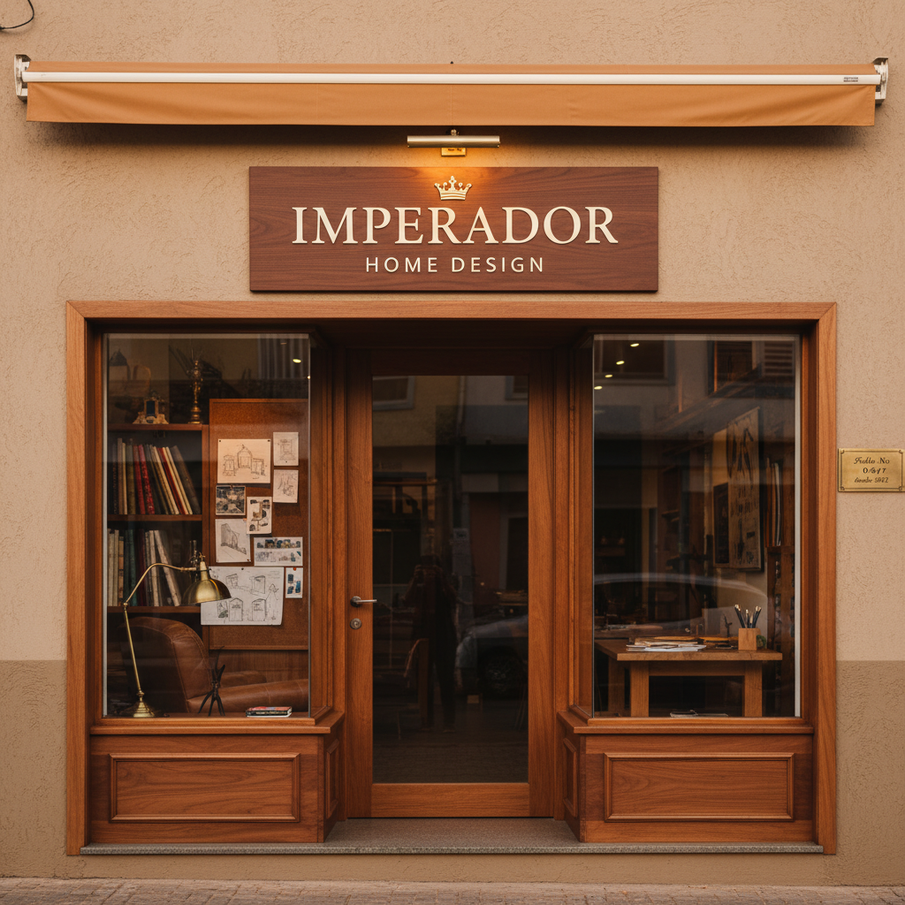
Logo + folha ocre. Identifica o ateliê.
02 · CartazQuadro de seleção
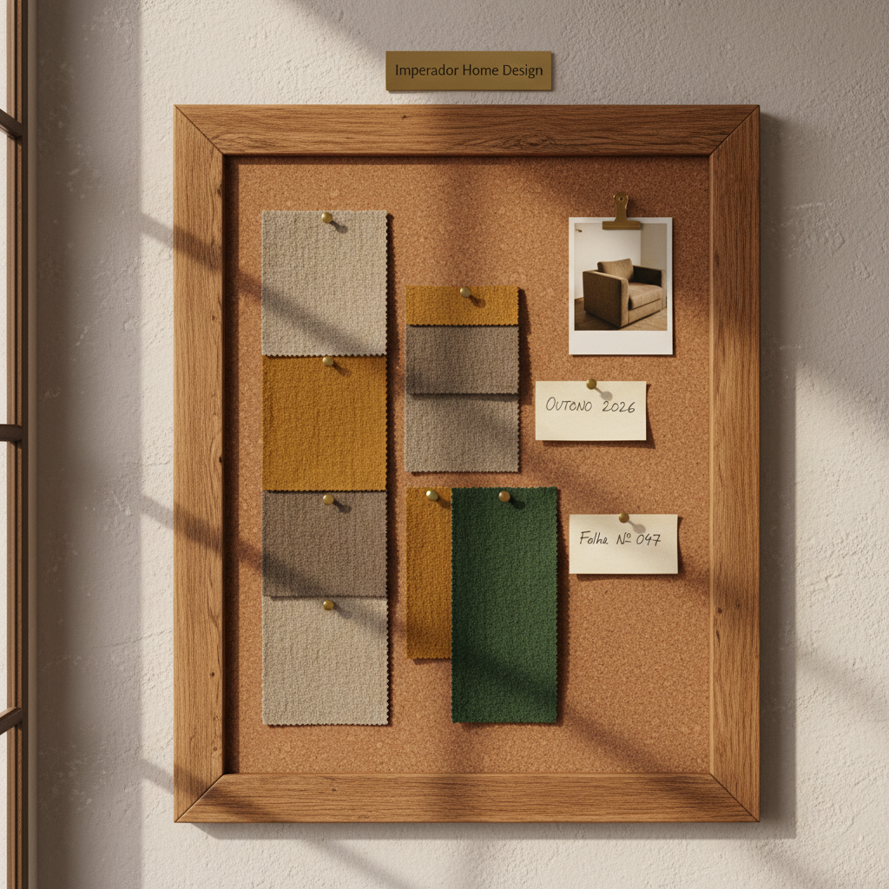
Cork board. Swatches, notas, polaroids.
03 · Swatch bookModelo 02 · SWATCH
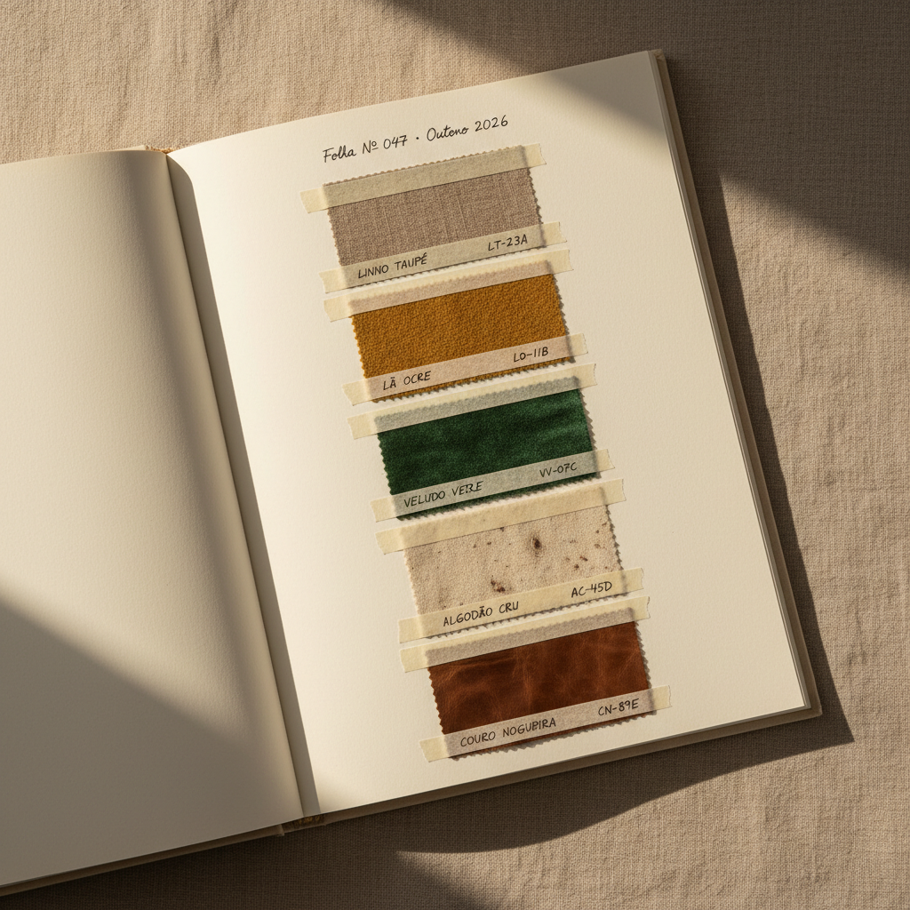
Caderno de amostras. Folha por material.
04 · SacolaEmbalagem com tag
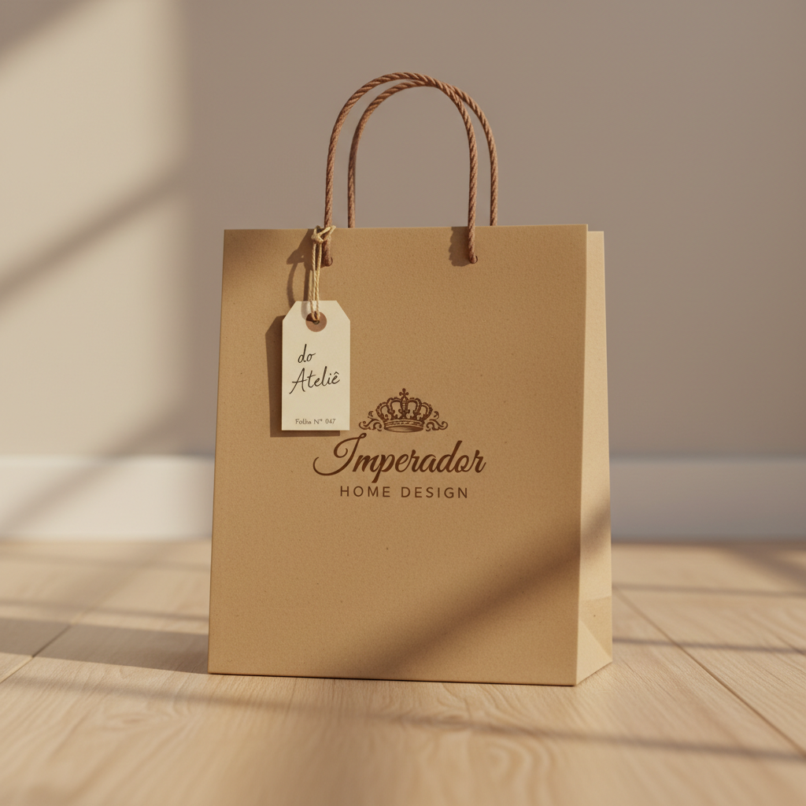
Kraft + tag manuscrita. Cliente leva.
05 · CartãoModelo 01 · FOLHA
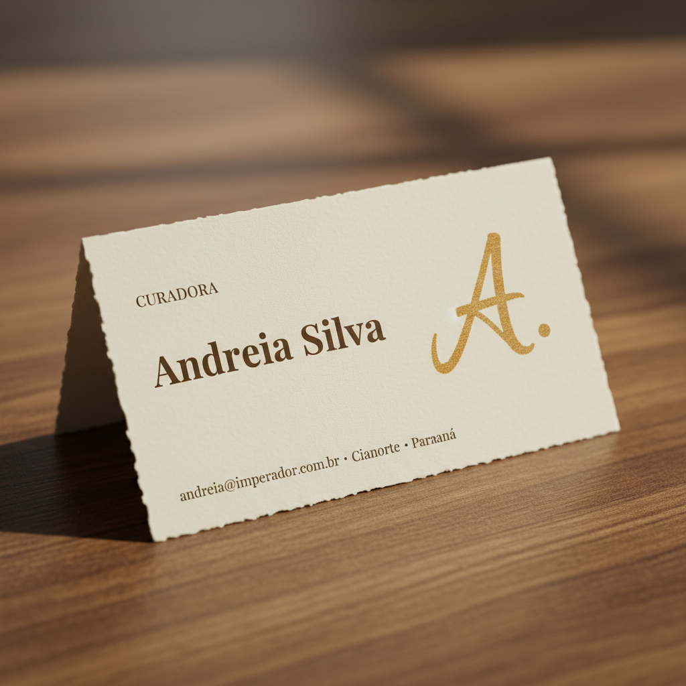
85×55mm. Andreia com rúbrica "A."
06 · CadernoModelo 04 · DIÁRIO
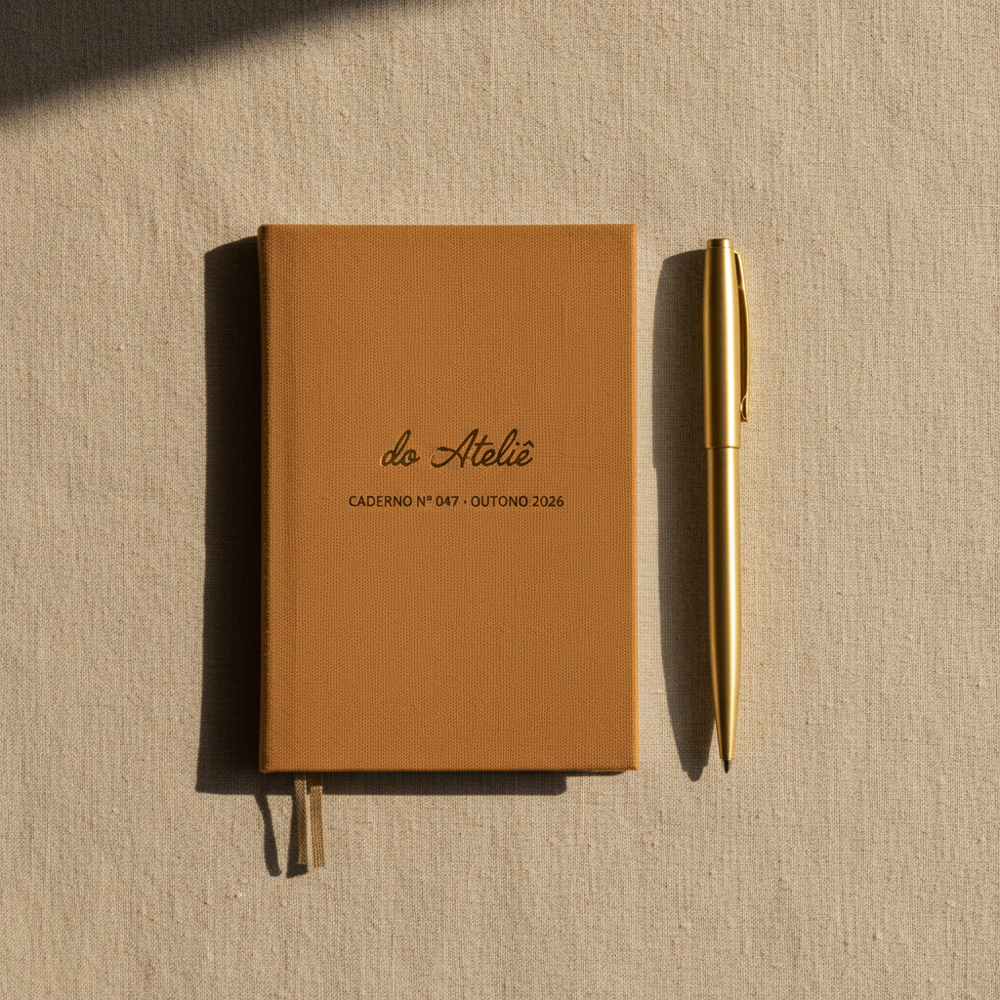
A5 sazonal. Diário entregue ao cliente.
PRIORIDADE DE PRODUÇÃO · INAUGURAÇÃO OUT 2026
Fachada e quadro de seleção devem estar prontos antes da abertura. Swatch book + cartão são alta personalização — fase 2. Sacola + caderno de processo viram experiência diferenciada da loja.
02
O Ateliê · Opções de marca · refino tipográfico + camadas de ateliê
Coroa intacta. Garamond no lugar de Caslon.
A coroa permanece igual. Cores idênticas. O wordmark migra para EB Garamond, serifa humanista com traço calígrafo, conversa com a manuscrita Caveat. Distinta da Libre Caslon do Arquivo e da Fraunces da Casa Aberta.
Opção A · Refino tipográfico v1.0 · RECOMENDADA
Logo atual · EB Garamond
Coroa intacta. Cores intactas. Wordmark migra para EB Garamond, serifa humanista de traço calígrafo, vocabulário de oficina.
Imperador
Home Design
Vence: coroa preservada, tipografia ganha alma de oficina. Garamond humanista combina com manuscrita Caveat e folha de caderno.
Dobra: mudança quase imperceptível. Em escala pequena pode parecer que nada foi feito.
Opção B · Folha de caderno
Logo EB Garamond + folha Nº abaixo
Wordmark em EB Garamond. Coroa e cores intactas. Acrescenta uma pequena folha de catálogo abaixo, manuscrita em ocre.
Imperador
Home Design
Vence: logo intacta. Folha é assinatura adicional opcional, aparece em ficha de material, carta ao cliente, post de detalhe.
Dobra: exige disciplina manuscrita. Andreia precisa assinar cada folha ou usar a versão padrão.
Opção C · Anotação A.
Logo EB Garamond + rúbrica da curadora
Wordmark em EB Garamond. Coroa intacta. Acrescenta "A." manuscrito como rúbrica da curadora abaixo.
Imperador
Home Design
A.
curadoria Andreia Silva
Vence: a curadora vira parte da marca. "A." carrega o trunfo de Andreia em todo material assinado.
Dobra: personaliza demais. Se Andreia sair da operação, a marca precisa ser refeita.
Território 03 de 03 · Capítulo
03Casa ao entardecer
A Casa
Aberta·
A marca como interior habitado em fotografia. A tipografia recua. A casa fala primeiro. Cada superfície da marca é uma porta para uma sala que recebe.
Ancorado em
Trunfo · Casa que recebe. Valor · Tempo acima da pressa.
O que tem neste capítulo · 09 horas·
01Mood board
02Assinatura·
03Paleta · 5 cores
04Tipografia · 2 faces
05Disciplina · 5 horas
06Opções de logo · 3 com coroa
07Antes/depois · perfil
08Antes/depois · post
09Aplicação ampliada · 3 posts
03
Imperador Home Design
Ponto âmbar · porta aberta
03
A Casa Aberta · Mood board · O mundo visual
A sala em luz da tarde·
Anoitecer
Foto-led
Tipografia recua
A casa ao entardecer. Cortina de linho filtrando o sol baixo. Sofá ocupado por livros e xícara. A foto não é showroom, é convite. A marca recua, a sala recebe.
Tinta profunda · Fundo
Anoitecer sem virar luto·
#1A140E
Âmbar · Acento
Luz da tarde. Único saturado.
#C89A55
Aa·
Fraunces italic light
Linho · Tipo
Calor de papel. Tipografia chama.
#EDE1CA
Surface · sala 023
A sala fica·
Família Marcos · luz da tarde.
CIANORTE · MAIO 2026
Terracota · Hospitalidade
Telha do quintal, vaso da varanda.
#A55A3F
03
A Casa Aberta · Por que essas cores
Horas da casa · 05 cores
A casa ao entardecer·
Cinco cores na sequência do dia que termina. Da parede no anoitecer até a luz que entra pela janela. A paleta lê a casa ao entardecer.
Hora 01 · Fundo
Tinta
profunda
#1A140E · 55%
Parede no anoitecer doméstico. Permite o âmbar funcionar como ponto de luz.
Hora 02 · Acento
Âmbar
#C89A55 · 8%
Luz da tarde no linho da cabeceira. Único saturado, racionado para a assinatura.
Hora 03 · Tipo
Linho
#EDE1CA · 22%
Calor de tecido na tipografia. Carrega o texto sem brancura clínica.
Hora 04 · Hospitalidade
Terracota
#A55A3F · 5%
Telha do quintal, vaso da varanda. Detalhe quente de cerâmica.
Hora 05 · Highlight
Bone
#F5EBDA · 10%
Parede branca da casa quando precisa abrir. Para tipografia maior.
03
A Casa Aberta · Por que essas fontes
Espécimes da casa · 02 faces
Tipografia que recua para a fotografia falar·
Duas faces, três pesos. Fraunces italic light para a voz da casa, Inter para tudo que é operação.
Face 01 · Voz
Fraunces·
Italic 300 · opsz 144
A casa fica quando você sai do trabalho·
Serifa com optical sizing. Carrega delicadeza do convite sem virar decorativa. Para títulos sobre fotografia.
Face 02 · Operação
Inter
Light 300 · Regular · Bold
Cianorte · sala vivida · Casa 023. Linho cru na cabeceira, freijó no piso, luz da tarde batendo de poente para nascente em diagonal.
Sans neutro para corpo. Light para sustentar sobriedade. Bold para CTAs e códigos.
03
A Casa Aberta · Disciplina · cinco regras por superfície
Regulamento da casa · 05 horas
Cinco regras que mantêm a porta aberta·
Disciplina mínima, cinco horas registradas. Cada regra com tolerância e antinomia, no tom da sala iluminada, não do manual técnico.
Saturação
Âmbar é o único saturado·
Teto ≤ 50% HSL · exceção: âmbar
Tinta, linho e bone desaturados. Terracota leve para acentos. Apenas âmbar fica acima do teto, para luz da tarde e CTAs.
Espacial
Fotografia full bleed·
Foto ocupa ≥ 70% da superfície
A imagem da sala vivida domina cada peça. Tipografia ocupa as bordas, nunca o centro. Margem fina, sem grade rígida.
Balanço
Ancorado no sujeito da foto·
Tipografia se ajusta à composição
A tipografia se posiciona em função do sujeito fotográfico, não da grade. A composição é da imagem, não do layout.
Deployment
· após o wordmark, sempre.
Mínimo: um ponto âmbar por superfície
O ponto âmbar sinaliza presença em toda peça. Sem o ponto, a peça não é parte da Casa Aberta.
Anti-trope · recusar
O que A Casa Aberta NÃO é·
7 recusas concretas · zero tolerância
Recusar: Airbnb Luxe estilizado. Wabi-sabi forçado de marca japonesa. Hotel boutique Fasano fake. Foto de produto isolado sobre fundo escuro de e-commerce. Vinhetes pesados estilo Restoration Hardware. Cinematic teaser de tecnologia. Filtros âmbar de Lightroom preset. "Moodyness performática" do Architectural Digest.
03
A Casa Aberta · Elemento de assinatura
Específico · assinatura · 03
O ponto âmbar de presença·
Um ponto único em âmbar, no tamanho da letra do wordmark. Lê como a porta está aberta, como a luz acesa da casa que vê a estrada.
Espécime · ponto único
Âmbar · 100% presença
Diâmetro · tamanho da maiúscula
Sempre após o wordmark
Regras de uso · 03
01
Tamanho. Diâmetro igual à altura da maiúscula vizinha.
02
Cor. Sempre em âmbar (#C89A55). Único saturado da paleta.
03
Posição. Sempre depois do wordmark. Nunca substitui pontuação.
Aplicações · 05
Wordmark
Imperador Home Design·
Footer
Cianorte· casa aberta
Favicon
Apenas o ponto, em âmbar sobre tinta profunda.
03
A Casa Aberta · Onde o ponto âmbar aparece · 8 superfícies
FICHA · ASSINATURA · 03
O ponto âmbar aparece em 8 superfícies.
Mesma cor âmbar, mesma escala discreta, mesma função: marca presença. Cliente reconhece o gesto em qualquer superfície da casa: é casa que recebe, não vitrine que mostra.
01 · Fachada
Sinalização externa
02 · Perfil
Marca digital
03 · Highlight
Capítulo nomeado
04 · Post
Saudação editorial
05 · Etiqueta
Tag no produto
06 · Convite
Convite com data
07 · Livro de visitas
Ficha de chegada
08 · Sinalização interna
Wayfinding interno
01 Tamanho. Constante 6–8px.
02 Cor. Âmbar #F4B942.
03 Função. Marca presença, não decora.
Fraunces300-0.01em
03
A Casa Aberta · Antes e depois · perfil @imperadorhomedesign
A sala substitui a vitrine.
Antes · perfil atual
imperadorhomedesign
1.681 posts
10,4 mil seguidores
Imperador Home Design
👑 Há 14 anos transformando lares com design, conforto e exclusividade.
🌟 Seu ambiente, sua história, nossa paixão. ❤️
Screenshot real de @imperadorhomedesign. Marca, bio institucional, feed em grade fechada. O ponto de partida.
Depois · A Casa Aberta
A porta está aberta
imperadorhomedesign·
14 anos
Sáb 9–13
Imperador Home Design
Cianorte, Paraná. A loja abre as portas. Cliente entra, senta, conhece a peça antes de levar pra casa. Sala em uso, sofá vivido.
Casa aberta · Maio 2026
A sala fica·A mesa fica·A vista fica
Avatar com coroa em linha âmbar sobre tinta profunda. Bio descreve a casa em uso. Feed mostra ambientes habitados, não vitrine.
03
A Casa Aberta · Modelos de overlay · 4 templates
SISTEMA DE HOSPEDAGEM · 4 MODELOS
Quatro gestos. Sete entradas.
Cada uma das 7 categorias do feed usa um dos 4 templates abaixo. Mesma gramática quente: Fraunces para frase, ponto âmbar para presença, mono para código.
01 · SAUDAÇÃO
~81% DO FEED
Ponto. Âmbar pequeno.
Eyebrow. Mono caps.
Frase. Fraunces italic.
Usado em. Andreia, Convidado, Cliente.
02 · TAG ÂMBAR
~36% DO FEED
Tag. Quadrado âmbar canto.
Nº. Mono pequeno.
Frase. Fraunces uso afetivo.
Usado em. Produto, Material.
03 · FAIXA DE DATA
~13% DO FEED
Faixa. Âmbar topo full.
Data. Mono DD·MMM·AAAA.
Frase. Fraunces âncora.
Usado em. Evento.
04 · FESTA DE CHEGADA
2% · MAIOR ALAVANCA
Pontos duplos. Marca presença emoldurada.
Saudação. Fraunces centralizada.
Fundo. Gradient escuro.
Usado em. Projeto entregue.
03
A Casa Aberta · Aplicação visual · 4 modelos em 7 categorias
SISTEMA DE HOSPEDAGEM · 7 CENAS
Os 4 modelos aplicados em foto real.
Cada categoria recebe um dos 4 templates do slide anterior. Ponto âmbar, tag, faixa de data ou festa de chegada. A foto sempre é o hero.
01 · Andreia · SAUDAÇÃO31% · 19
Ponto + frase italic. Saudação direta.
02 · Produto · TAG ÂMBAR36% · 22
Tag âmbar canto. Produto vira convite.
03 · Evento · FAIXA DE DATA13% · 8
21 · ABR · 2026
CIANORTE · QUARTA
Faixa âmbar topo. Data é manchete.
04 · Convidado · SAUDAÇÃO+ASPA7% · 4
Aspa âmbar. Voz do convidado.
05 · Gerência · SAUDAÇÃO7% · 4
Equipe nomeada. Bastidor é parte da casa.
06 · Promo · REJEITADO3% · 2
Reframe convite. Promo vira hospitalidade.
07 · Projeto · FESTA DE CHEGADA2% · MAIOR ALAVANCA
Casa Marcos · Obra Nº 023
Bem-vindos pra casa.
7 meses · 184 dias · da planta à festa
Saudação centralizada. Pontos duplos. Gradient escuro. Largo, formato de manchete.
03
A Casa Aberta · Aplicação física · onde o sistema sai do feed
APLICAÇÃO FÍSICA · 6 SUPERFÍCIES
A casa recebe também em papel, tecido e vidro.
Os 4 modelos da Casa Aberta aplicam-se em fachada, convite, etiqueta de boas-vindas, sacola, cartão da anfitriã e livro de visitas. O ponto âmbar atravessa o substrato.
01 · FachadaSinalização externa
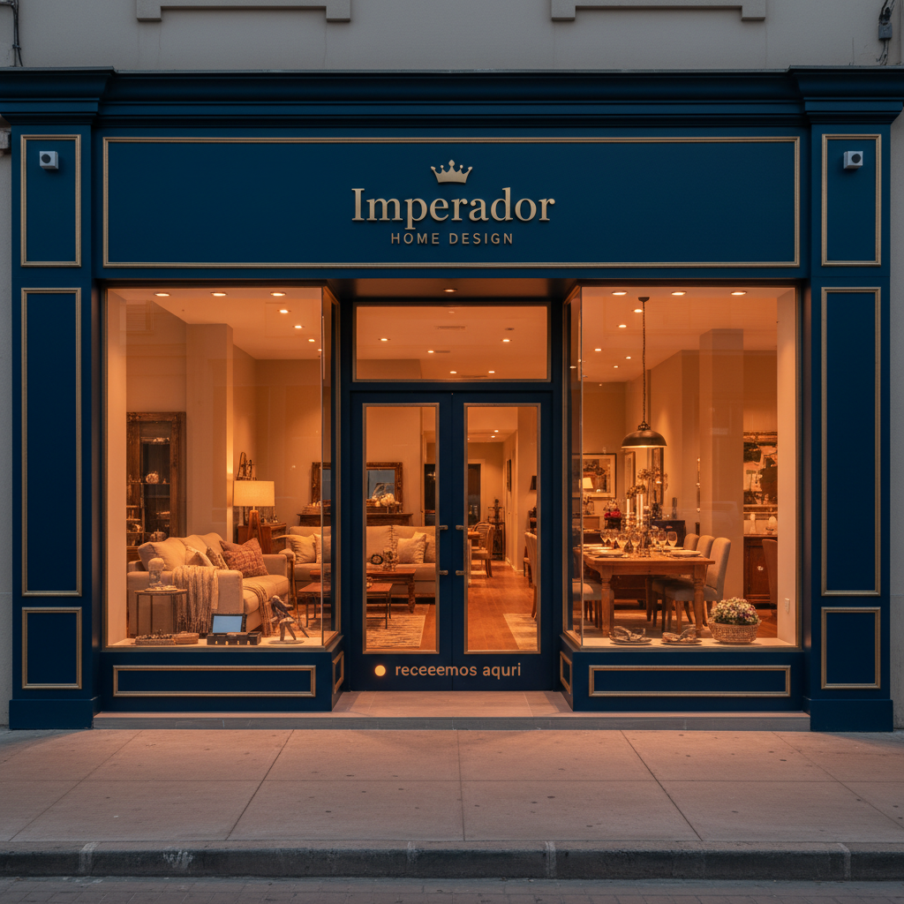
Logo + ponto âmbar. Recebe na rua.
02 · ConviteModelo 04 · FESTA
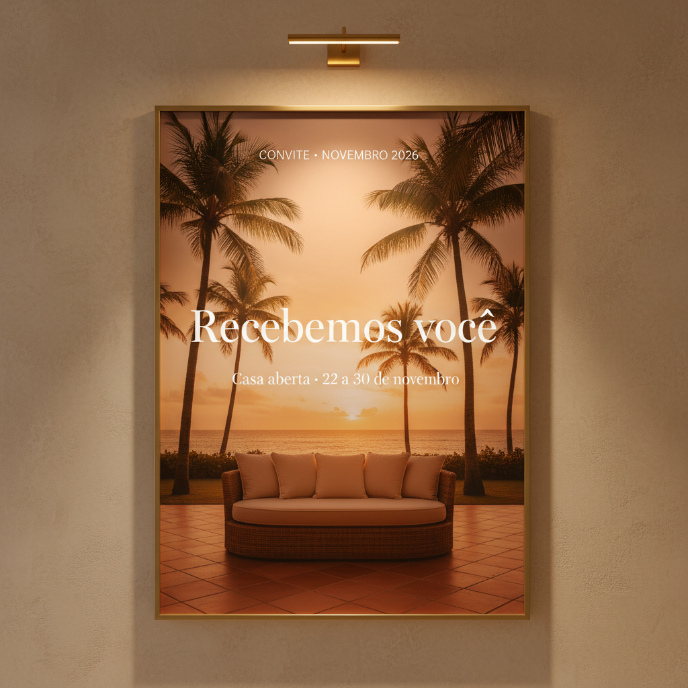
Pôster A2. "Recebemos você · 22-30 nov".
03 · EtiquetaModelo 02 · TAG
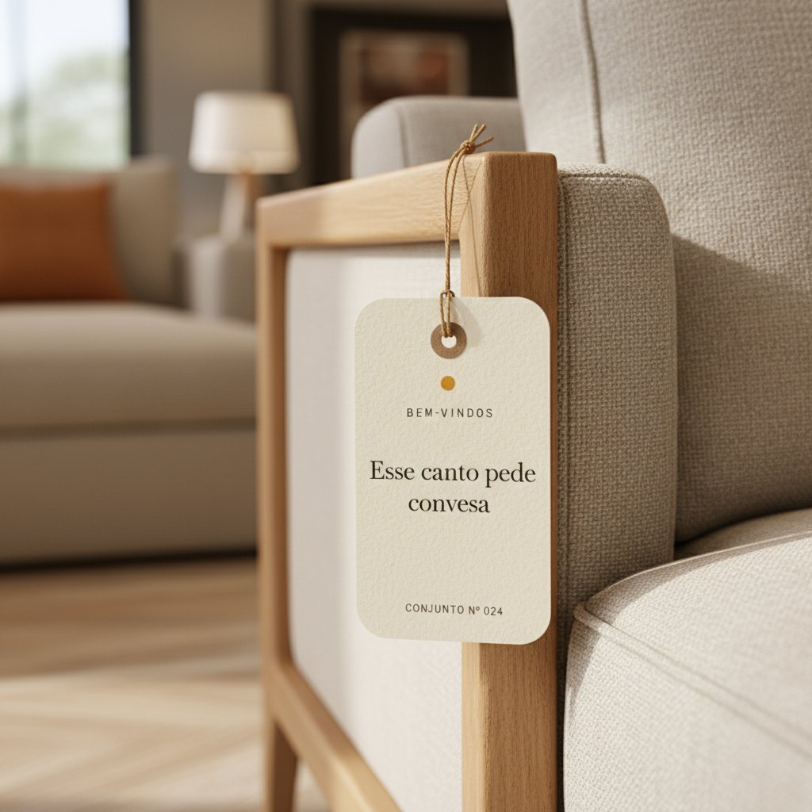
Tag bem-vindo. Frase afetiva + Nº.
04 · SacolaEmbalagem com tagline
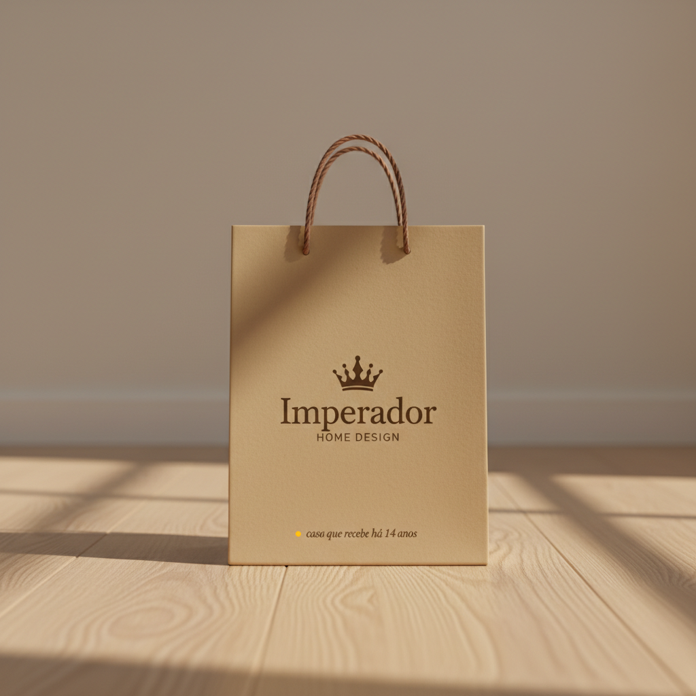
Kraft + tagline. "Casa que recebe há 14 anos".
05 · CartãoModelo 01 · SAUDAÇÃO
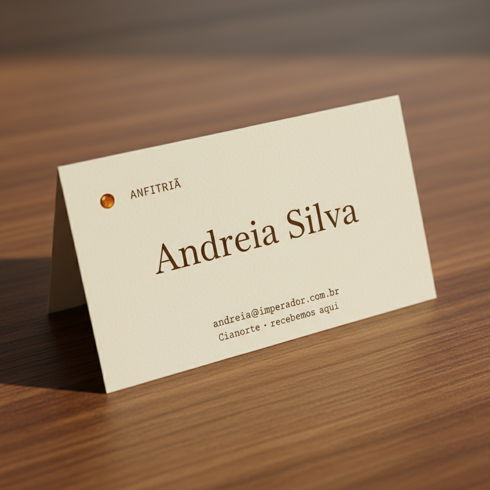
85x55mm. Andreia como anfitriã.
06 · Livro de visitasQuem passou pela casa
Hardbound A5. Famílias deixam recado.
PRIORIDADE DE PRODUÇÃO · INAUGURAÇÃO OUT 2026
Fachada e convite (open house) são alta prioridade pra abertura. Livro de visitas é experiência marcante, entrega na chegada de cada família. Cartão e sacola são reforço.
03
A Casa Aberta · Opções de marca · refino tipográfico + camadas de hospitalidade
Coroa intacta. Fraunces no lugar de Caslon.
A coroa permanece igual. Cores idênticas. O wordmark migra para Fraunces, serifa contemporânea com eixos variáveis, conversa com a hospitalidade da casa. Distinta da Libre Caslon do Arquivo e da EB Garamond do Ateliê.
Opção A · Refino tipográfico v1.0 · RECOMENDADA
Logo atual · Fraunces
Coroa intacta. Cores intactas. Wordmark migra para Fraunces, serifa hospitaleira com traço variável.
Imperador
Home Design
Vence: coroa preservada, tipografia ganha calor de anfitriã. Fraunces variável conversa com a frase de boas-vindas.
Dobra: mudança quase imperceptível. Em escala pequena pode parecer que nada foi feito.
Opção B · Ponto âmbar
Logo Fraunces + ponto de presença
Wordmark em Fraunces. Coroa e cores intactas. Acrescenta o ponto âmbar do território como marca de presença.
Home Design
Vence: logo intacta. Ponto âmbar marca presença, vira assinatura em material da casa, cartaz, livro de visitas.
Dobra: exige disciplina de aplicação. Sem o ponto, marca perde identidade do território.
Opção C · Saudação
Logo Fraunces + frase da casa
Wordmark em Fraunces. Coroa intacta. Acrescenta "casa aberta" como saudação italic abaixo.
Imperador
Home Design
Vence: a saudação vira parte da marca. "Casa aberta" carrega a promessa do território em todo material assinado.
Dobra: compromete a marca com uma frase fixa. Se o território evoluir, a logo precisa ser refeita.
04
.
Capítulo 04 · Encerramento
Três casas.
Uma decisão.
Os 3 territórios estão prontos. A escolha é sua.
O Arquivo
editorial · acervo · curadoria
O Ateliê
oficina · caderno · manuscrita
A Casa Aberta
hospitalidade · anfitriã · convite
04
Encerramento · Recap comparativo
Três casas. Lado a lado.
Comparação à vista. Cada coluna é uma decisão completa. Leitura vertical, contraste horizontal.
O Arquivo
CASA Nº 023 · ABR 2026
Família Marcos
Imperador
Home Design
Promessa
A casa que dura no acervo.
Tom
Editorial. Conhecedor sereno.
Fonte
Libre Caslon Text
Cor
Terracotta · #a55a3f
Modelo dom.
CARD · 81% dos posts
Alavanca
TÍTULO · Casa entregue
Disciplina
Numerar tudo. Nº edita o feed.
Vocabulário
acervo · ficha · curadoria
Vence em. Autoridade silenciosa. Cliente lê como revista.
Dobra em. Distância afetiva. Pode soar formal demais.
O Ateliê
DIÁRIO DE OBRA
Casa Marcos
Nº 023 · 184 DIAS
Imperador
Home Design
Promessa
A casa feita à mão.
Tom
Manuscrito. Andreia em primeira pessoa.
Fonte
EB Garamond · Caveat
Cor
Ocre · #c08a4a
Modelo dom.
FOLHA · 81% dos posts
Alavanca
DIÁRIO · Casa Marcos
Disciplina
"A." em tudo que Andreia toca.
Vocabulário
folha · oficina · curadora
Vence em. Intimidade. Andreia vira a marca, em pessoa.
Dobra em. Não sobrevive sem ela. Sai Andreia, refaz marca.
A Casa Aberta
Home Design
Promessa
A casa que abre as portas.
Tom
Anfitriã. Calor sem afetação.
Fonte
Fraunces
Cor
Âmbar · #c89a55 / #f4b942
Modelo dom.
SAUDAÇÃO · 81% dos posts
Alavanca
FESTA · Casa Marcos
Disciplina
Ponto âmbar = marca de presença.
Vocabulário
recebe · cena · anfitriã
Vence em. Calor. Cliente sente convidado antes de comprar.
Dobra em. Foca em pessoas, não no objeto. Produto vira pano de fundo.
04
Encerramento · Próximos passos · tomada de decisão
A decisão é da Andreia.
Seis perguntas para destravar a escolha. Depois, dez dias úteis até o brand book completo entregue.
Zona 01 · Critérios
seis perguntas para a Andreia
01
Qual território você consegue defender no telefone amanhã?Convicção pessoal é o teste mais rápido. Se hesita ao explicar, não é o caminho.
02
Qual fala primeiro para o arquiteto parceiro?Programa Arquiteto Parceiro precisa de autoridade técnica e linguagem de projeto.
03
Qual fala primeiro para o cliente final que entra na loja?A inauguração de out/2026 traz fluxo de gente nova. A marca precisa receber.
04
Qual demanda menos disciplina operacional para o Rafael executar?Toda regra que sobra para o time vira ruído no feed.
05
Qual sobrevive se você sair da operação um dia?Marca pessoal cria amarras. Marca de sistema cria liberdade.
06
Qual eleva sem afastar?O limite estratégico declarado. Premium não pode virar muro.
Zona 02 · Cronograma
o que vem depois
Fase 2 · Brand Book Completo
10 dias úteis após decisão.
Decidido o território, parto pra construção da identidade visual completa e do manual de marca.
Janela crítica · Inauguração out/2026
Para a fachada, cartaz e papelaria estarem prontos na abertura do novo prédio, a decisão precisa ser tomada até final de junho/2026. Brand book completo entrega até segunda metade de julho/2026.
Próxima conversa
Adriano · Andreia · Rafael
Call de 60 minutos para decidir o território. Levo as 6 perguntas, vocês trazem a leitura. Saímos com decisão tomada.
04
.
Imperador Home Design · Decisão de Identidade Visual
Obrigado.
Pela conversa. Pelo tempo. Pela confiança em deixar a marca ser refeita com cuidado.
Consultoria de marca
Adriano da Silva Domingues
ASD Comunicação
Cliente
Andreia Silva · Rafael Ramos
Imperador Home Design · Cianorte/PR
Data
Junho 2026
Fase 1 · Identidade visual